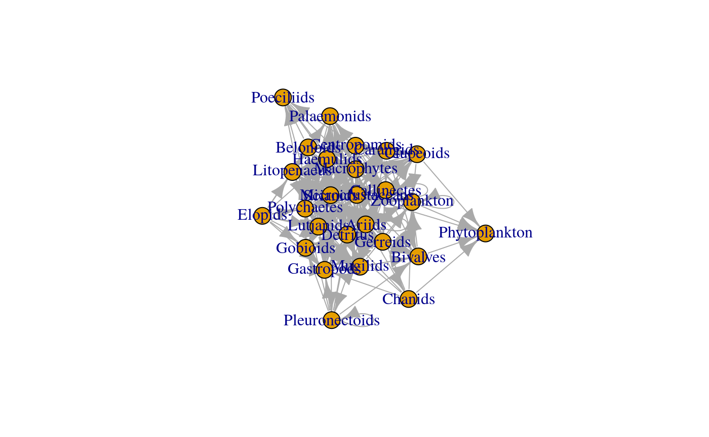

vignettes/rmangal.Rmd
rmangal.Rmdrmangal is a R client for MANGAL API. MANGAL is a collection of 172 datasets representing over 1300 published ecological networks. . In 2016, a first paper was published with the first release of mangal Poisot et al. (2016).
all_datasets <- search_datasets()
#> Found 172 datasets
all_datasets[1:6, c("id", "name" ,"description")]
#> id name
#> 1 2 howking_1968
#> 2 7 lundgren_olesen_2005
#> 3 9 elberling_olesen_1999
#> 4 14 johnston_1956
#> 5 15 havens_1992
#> 6 16 kemp_1977
#> description
#> 1 Insect activity recorded on flower at Lake Hazen, Ellesmere Island, N.W.T., Canada
#> 2 Pollnator activity recorded on flowers, Uummannaq Island, Greenland, Danmark
#> 3 Flower-visiting insect at Mt. Latnjatjarro, northern Sweden
#> 4 Predation by short-eared owls on a salicornia salt marsh
#> 5 Pelagic communities of small lakes and ponds of the Adirondack
#> 6 Food web for the Crystal River estuaryig_lagoons <- as.igraph(net_lagoons)
plot(ig_lagoons[[1]], vertex.label = vertex_attr(ig_lagoons[[1]],"original_name"))
all_networks <- search_networks()
#> Found 1386 networks
netw18 <- get_network_by_id(id = 18)
## 2B fixed
collec <- search_networks(query="insect%") %>% get_collection()
#> Found 14 networks
collec[[1]]
#> $network
#> Simple feature collection with 1 feature and 10 fields
#> geometry type: POINT
#> dimension: XY
#> bbox: xmin: -114.9667 ymin: 75 xmax: -114.9667 ymax: 75
#> epsg (SRID): 4326
#> proj4string: +proj=longlat +datum=WGS84 +no_defs
#> id name date
#> 1 18 mosquin_martin_1967_19650731_18 1965-07-31T04:00:00.000Z
#> description
#> 1 Occurence of flower-visiting insect on plant species, two miles north of Bailey Point, Melville Island, N.W.T., Canada
#> public all_interactions created_at
#> 1 TRUE FALSE 2019-02-22T18:38:37.491Z
#> updated_at dataset_id user_id geom
#> 1 2019-02-22T18:38:37.491Z 4 3 POINT (-114.9667 75)
#>
#> $nodes
#> id original_name node_level network_id taxonomy_id
#> 1 2599 Spilogona sanctipauli taxon 18 1591
#> 2 2600 Bombus polaris taxon 18 1956
#> 3 2602 Colias hecla taxon 18 1540
#> 4 2604 Boloria improba taxon 18 1959
#> 5 2606 Spilogona latilamina taxon 18 1589
#> 6 2607 Boreellus atriceps taxon 18 1596
#> 7 2608 Spilogona dorsata taxon 18 1588
#> 8 2609 Spilogona projecta taxon 18 1961
#> 9 2611 Spilogona melanosoma taxon 18 1590
#> 10 2613 Colias nastes taxon 18 1963
#> 11 2614 Protocalliphora sp1 M_PL_024 taxon 18 1964
#> 12 2615 Rhamphomyia sp1 M_PL_024 taxon 18 1573
#> 13 2616 Spilogona hurdiana taxon 18 1965
#> 14 2617 Potentilla vahliana taxon 18 1966
#> 15 2618 Dryas integrifolia taxon 18 1504
#> 16 2619 Taraxacum sp1 M_PL_024 taxon 18 1967
#> 17 2620 Caltha palustris taxon 18 1968
#> 18 2621 Cerastium alpinum taxon 18 1499
#> 19 2622 Arnica alpina taxon 18 1496
#> 20 2623 Astragalus alpinus taxon 18 1969
#> 21 2624 Petasites frigidus taxon 18 1970
#> 22 2625 Papaver radicatum taxon 18 1510
#> 23 2626 Geum rossii taxon 18 1971
#> 24 2627 Oxytropis arctica taxon 18 1972
#> 25 2612 Anarta richardsoni taxon 18 NA
#> 26 2601 Spilogona almquistii taxon 18 NA
#> 27 2603 Eupogonomyia probilofensis taxon 18 NA
#> 28 2605 Pogonomyiodes segnis taxon 18 NA
#> 29 2610 Spilogona aesturium taxon 18 NA
#> created_at updated_at taxonomy.id
#> 1 2019-02-22T18:38:40.906Z 2019-02-22T18:38:40.906Z 1591
#> 2 2019-02-22T18:38:40.950Z 2019-02-22T18:38:40.950Z 1956
#> 3 2019-02-22T18:38:41.004Z 2019-02-22T18:38:41.004Z 1540
#> 4 2019-02-22T18:38:41.070Z 2019-02-22T18:38:41.070Z 1959
#> 5 2019-02-22T18:38:41.141Z 2019-02-22T18:38:41.141Z 1589
#> 6 2019-02-22T18:38:41.186Z 2019-02-22T18:38:41.186Z 1596
#> 7 2019-02-22T18:38:41.236Z 2019-02-22T18:38:41.236Z 1588
#> 8 2019-02-22T18:38:41.279Z 2019-02-22T18:38:41.279Z 1961
#> 9 2019-02-22T18:38:41.363Z 2019-02-22T18:38:41.363Z 1590
#> 10 2019-02-22T18:38:41.445Z 2019-02-22T18:38:41.445Z 1963
#> 11 2019-02-22T18:38:41.486Z 2019-02-22T18:38:41.486Z 1964
#> 12 2019-02-22T18:38:41.530Z 2019-02-22T18:38:41.530Z 1573
#> 13 2019-02-22T18:38:41.573Z 2019-02-22T18:38:41.573Z 1965
#> 14 2019-02-22T18:38:41.604Z 2019-02-22T18:38:41.604Z 1966
#> 15 2019-02-22T18:38:41.637Z 2019-02-22T18:38:41.637Z 1504
#> 16 2019-02-22T18:38:41.680Z 2019-02-22T18:38:41.680Z 1967
#> 17 2019-02-22T18:38:41.721Z 2019-02-22T18:38:41.721Z 1968
#> 18 2019-02-22T18:38:41.761Z 2019-02-22T18:38:41.761Z 1499
#> 19 2019-02-22T18:38:41.808Z 2019-02-22T18:38:41.808Z 1496
#> 20 2019-02-22T18:38:41.843Z 2019-02-22T18:38:41.843Z 1969
#> 21 2019-02-22T18:38:41.887Z 2019-02-22T18:38:41.887Z 1970
#> 22 2019-02-22T18:38:41.985Z 2019-02-22T18:38:41.985Z 1510
#> 23 2019-02-22T18:38:42.143Z 2019-02-22T18:38:42.143Z 1971
#> 24 2019-02-22T18:38:42.240Z 2019-02-22T18:38:42.240Z 1972
#> 25 2019-02-22T18:38:41.405Z 2019-02-22T18:38:41.405Z NA
#> 26 2019-02-22T18:38:40.980Z 2019-02-22T18:38:40.980Z NA
#> 27 2019-02-22T18:38:41.039Z 2019-02-22T18:38:41.039Z NA
#> 28 2019-02-22T18:38:41.103Z 2019-02-22T18:38:41.103Z NA
#> 29 2019-02-22T18:38:41.329Z 2019-02-22T18:38:41.329Z NA
#> taxonomy.name taxonomy.ncbi taxonomy.tsn taxonomy.eol
#> 1 Spilogona sanctipauli 1790216 151014 730414
#> 2 Bombus polaris 130708 714831 1065341
#> 3 Colias hecla 78613 188527 175775
#> 4 Boloria improba 977890 777984 46796765
#> 5 Spilogona latilamina NA 150919 732134
#> 6 Protophormia atriceps 142853 151675 730025
#> 7 Spilogona dorsata 1790214 150885 732619
#> 8 Spilogona projecta NA 150990 747098
#> 9 Spilogona melanosoma 1291949 150939 732129
#> 10 Colias tyche 596546 777742 176091
#> 11 Protocalliphora 142901 151690 54973
#> 12 Rhamphomyia 192612 136123 55386
#> 13 Spilogona hurdiana NA 150908 747112
#> 14 Potentilla vahliana 667290 24758 301054
#> 15 Dryas integrifolia 395290 24614 629466
#> 16 Taraxacum 49743 36199 468411
#> 17 Caltha palustris 3449 18454 596646
#> 18 Cerastium alpinum 271556 19946 589306
#> 19 Arnica angustifolia alpina NA 36556 47141408
#> 20 Astragalus alpinus 20403 25393 418736
#> 21 Petasites frigidus 56019 36054 47141412
#> 22 Papaver radicatum 357475 518422 47158290
#> 23 Geum rossii 148884 24660 52202147
#> 24 Oxytropis arctica 180075 26163 415929
#> 25 <NA> NA NA NA
#> 26 <NA> NA NA NA
#> 27 <NA> NA NA NA
#> 28 <NA> NA NA NA
#> 29 <NA> NA NA NA
#> taxonomy.bold taxonomy.gbif taxonomy.col
#> 1 365798 1532196 833656371e40bd4782961b44abeda797
#> 2 31789 1340367 2a7dd1d3a99176092d09b17c65ddc7ac
#> 3 69799 5137595 b29021e7e9bbe5b36ea0883f69094f3c
#> 4 100095 4299581 <NA>
#> 5 NA 1532457 c50081d3fc1cb533742f5fc97ceae294
#> 6 174016 1504855 7a56b6074179b43d135a324bbb63a1b4
#> 7 365794 1532388 ca103165c6dfd8291f92af8dcb80e1c3
#> 8 NA 1532068 adfc31f20f0cdc196531afbae032247b
#> 9 228564 1532288 a90335e943094b5aa7b5731298d7f32c
#> 10 56199 5137636 61c6c6607a34995a112b2b3e69426c41
#> 11 7818 NA 811ccfc276427457d30bc0410c28fcf4
#> 12 365789 NA 38e7268f477057b1ca7bfb837e4401bd
#> 13 NA 1532425 e5a1094d75c80006b3c42a0b830d7283
#> 14 263269 5368522 baa98384a6ec81390e2314ff01b49e89
#> 15 260153 5364129 2ebd643d118b04180fa802d332cca458
#> 16 121527 NA 7633c8aa30d05f0ca2dfe7b290752e33
#> 17 121193 5371685 075c72b100babb3494b8013ca3ec7c71
#> 18 263405 3085450 d5f840b6667189d5e1aebfb21587f266
#> 19 NA NA 92905ad648f17b749082a644f485607f
#> 20 257037 5345014 cda432f84391f3ee23659f3249ca12f3
#> 21 263274 3088323 64c006c4f71868a82831637310d0fe2f
#> 22 501588 2888444 f0d646a14db7351ca7c469085610436d
#> 23 351819 5369874 32913186edafb38121fdc5f0fa875f36
#> 24 260104 5360834 7faf3755d44ee5a31b259a8c65b1bcac
#> 25 NA NA <NA>
#> 26 NA NA <NA>
#> 27 NA NA <NA>
#> 28 NA NA <NA>
#> 29 NA NA <NA>
#> taxonomy.rank taxonomy.created_at taxonomy.updated_at
#> 1 species 2019-02-21T22:09:57.694Z 2019-06-14T15:21:26.240Z
#> 2 species 2019-02-21T22:14:44.947Z 2019-06-14T15:21:45.817Z
#> 3 species 2019-02-21T22:09:54.188Z 2019-06-14T15:21:23.797Z
#> 4 <NA> 2019-02-21T22:14:45.385Z 2019-06-14T13:28:24.681Z
#> 5 species 2019-02-21T22:09:57.560Z 2019-06-14T15:21:26.140Z
#> 6 species 2019-02-21T22:09:58.048Z 2019-06-14T15:21:26.390Z
#> 7 species 2019-02-21T22:09:57.497Z 2019-06-14T15:21:26.084Z
#> 8 species 2019-02-21T22:14:45.571Z 2019-06-14T15:21:45.975Z
#> 9 species 2019-02-21T22:09:57.628Z 2019-06-14T15:21:26.189Z
#> 10 species 2019-02-21T22:14:45.683Z 2019-06-14T15:21:46.101Z
#> 11 genus 2019-02-21T22:14:45.743Z 2019-06-14T15:21:46.151Z
#> 12 genus 2019-02-21T22:09:56.302Z 2019-06-14T15:21:25.622Z
#> 13 species 2019-02-21T22:14:45.805Z 2019-06-14T15:21:46.200Z
#> 14 species 2019-02-21T22:14:45.867Z 2019-06-14T15:21:46.250Z
#> 15 species 2019-02-21T22:09:51.972Z 2019-06-14T15:21:21.990Z
#> 16 genus 2019-02-21T22:14:45.953Z 2019-06-14T15:21:46.300Z
#> 17 species 2019-02-21T22:14:46.028Z 2019-06-14T15:21:46.353Z
#> 18 species 2019-02-21T22:09:51.597Z 2019-06-14T15:21:21.725Z
#> 19 infraspecies 2019-02-21T22:09:51.310Z 2019-06-14T15:21:21.538Z
#> 20 species 2019-02-21T22:14:46.086Z 2019-06-14T15:21:46.408Z
#> 21 species 2019-02-21T22:14:46.142Z 2019-06-14T15:21:46.997Z
#> 22 species 2019-02-21T22:09:52.318Z 2019-06-14T15:21:22.191Z
#> 23 species 2019-02-21T22:14:46.197Z 2019-06-14T15:21:47.051Z
#> 24 species 2019-02-21T22:14:46.255Z 2019-06-14T15:21:47.102Z
#> 25 <NA> <NA> <NA>
#> 26 <NA> <NA> <NA>
#> 27 <NA> <NA> <NA>
#> 28 <NA> <NA> <NA>
#> 29 <NA> <NA> <NA>
#> taxonomy
#> 1 NA
#> 2 NA
#> 3 NA
#> 4 NA
#> 5 NA
#> 6 NA
#> 7 NA
#> 8 NA
#> 9 NA
#> 10 NA
#> 11 NA
#> 12 NA
#> 13 NA
#> 14 NA
#> 15 NA
#> 16 NA
#> 17 NA
#> 18 NA
#> 19 NA
#> 20 NA
#> 21 NA
#> 22 NA
#> 23 NA
#> 24 NA
#> 25 NA
#> 26 NA
#> 27 NA
#> 28 NA
#> 29 NA
#>
#> $edges
#> Simple feature collection with 38 features and 19 fields (with 1 geometry empty)
#> geometry type: POINT
#> dimension: XY
#> bbox: xmin: Inf ymin: Inf xmax: -Inf ymax: -Inf
#> epsg (SRID): 4326
#> proj4string: +proj=longlat +datum=WGS84 +no_defs
#> First 10 features:
#> id node_from node_to date direction type
#> 1 52630 2599 2617 1965-07-31T00:00:00.000Z directed mutualism
#> 2 52631 2599 2618 1965-07-31T00:00:00.000Z directed mutualism
#> 3 52632 2599 2619 1965-07-31T00:00:00.000Z directed mutualism
#> 4 52633 2599 2620 1965-07-31T00:00:00.000Z directed mutualism
#> 5 52634 2599 2621 1965-07-31T00:00:00.000Z directed mutualism
#> 6 52635 2599 2622 1965-07-31T00:00:00.000Z directed mutualism
#> 7 52636 2600 2623 1965-07-31T00:00:00.000Z directed mutualism
#> 8 52637 2600 2624 1965-07-31T00:00:00.000Z directed mutualism
#> 9 52638 2601 2617 1965-07-31T00:00:00.000Z directed mutualism
#> 10 52639 2601 2618 1965-07-31T00:00:00.000Z directed mutualism
#> method attr_id value public network_id
#> 1 field observation/capture 3 19 TRUE 18
#> 2 field observation/capture 3 15 TRUE 18
#> 3 field observation/capture 3 1 TRUE 18
#> 4 field observation/capture 3 3 TRUE 18
#> 5 field observation/capture 3 3 TRUE 18
#> 6 field observation/capture 3 2 TRUE 18
#> 7 field observation/capture 3 15 TRUE 18
#> 8 field observation/capture 3 1 TRUE 18
#> 9 field observation/capture 3 5 TRUE 18
#> 10 field observation/capture 3 3 TRUE 18
#> created_at updated_at attribute.id
#> 1 2019-02-24T21:34:01.049Z 2019-02-24T21:34:01.049Z 3
#> 2 2019-02-24T21:34:01.117Z 2019-02-24T21:34:01.117Z 3
#> 3 2019-02-24T21:34:01.158Z 2019-02-24T21:34:01.158Z 3
#> 4 2019-02-24T21:34:01.195Z 2019-02-24T21:34:01.195Z 3
#> 5 2019-02-24T21:34:01.251Z 2019-02-24T21:34:01.251Z 3
#> 6 2019-02-24T21:34:01.302Z 2019-02-24T21:34:01.302Z 3
#> 7 2019-02-24T21:34:01.356Z 2019-02-24T21:34:01.356Z 3
#> 8 2019-02-24T21:34:01.461Z 2019-02-24T21:34:01.461Z 3
#> 9 2019-02-24T21:34:01.557Z 2019-02-24T21:34:01.557Z 3
#> 10 2019-02-24T21:34:01.603Z 2019-02-24T21:34:01.603Z 3
#> attribute.name attribute.description
#> 1 number of pollinator Number of insects captured while pollination
#> 2 number of pollinator Number of insects captured while pollination
#> 3 number of pollinator Number of insects captured while pollination
#> 4 number of pollinator Number of insects captured while pollination
#> 5 number of pollinator Number of insects captured while pollination
#> 6 number of pollinator Number of insects captured while pollination
#> 7 number of pollinator Number of insects captured while pollination
#> 8 number of pollinator Number of insects captured while pollination
#> 9 number of pollinator Number of insects captured while pollination
#> 10 number of pollinator Number of insects captured while pollination
#> attribute.unit attribute.created_at attribute.updated_at
#> 1 individual captured 2019-02-22T16:45:42.655Z 2019-02-22T16:45:42.655Z
#> 2 individual captured 2019-02-22T16:45:42.655Z 2019-02-22T16:45:42.655Z
#> 3 individual captured 2019-02-22T16:45:42.655Z 2019-02-22T16:45:42.655Z
#> 4 individual captured 2019-02-22T16:45:42.655Z 2019-02-22T16:45:42.655Z
#> 5 individual captured 2019-02-22T16:45:42.655Z 2019-02-22T16:45:42.655Z
#> 6 individual captured 2019-02-22T16:45:42.655Z 2019-02-22T16:45:42.655Z
#> 7 individual captured 2019-02-22T16:45:42.655Z 2019-02-22T16:45:42.655Z
#> 8 individual captured 2019-02-22T16:45:42.655Z 2019-02-22T16:45:42.655Z
#> 9 individual captured 2019-02-22T16:45:42.655Z 2019-02-22T16:45:42.655Z
#> 10 individual captured 2019-02-22T16:45:42.655Z 2019-02-22T16:45:42.655Z
#> geom
#> 1 POINT EMPTY
#> 2 POINT EMPTY
#> 3 POINT EMPTY
#> 4 POINT EMPTY
#> 5 POINT EMPTY
#> 6 POINT EMPTY
#> 7 POINT EMPTY
#> 8 POINT EMPTY
#> 9 POINT EMPTY
#> 10 POINT EMPTY
#>
#> $dataset
#> id name date
#> 1 4 mosquin_martin_1967 1965-07-31T04:00:00.000Z
#> description
#> 1 Occurence of flower-visiting insect on plant species, two miles north of Bailey Point, Melville Island, N.W.T., Canada
#> public created_at updated_at ref_id user_id
#> 1 TRUE 2019-02-22T16:45:59.451Z 2019-02-22T16:45:59.451Z 4 3
#>
#> $reference
#> id doi author year jstor pmid
#> 1 4 NA mosquin 1967 NA NA
#> bibtex
#> 1 @article{article, author = {Mosquin, Theodore and Martin, J. E. H.}, year = {1967}, pages = {201-205}, title = {Observations on the pollination biology of plants on Melville Island, N.W.T., Canada}, journal = {Canadian Field Naturalist}, volume = {81}}
#> paper_url
#> 1 https://www.biodiversitylibrary.org/pdf4/075601100090098.pdf
#> data_url
#> 1 https://www.nceas.ucsb.edu/interactionweb/data/plant_pollinator/excel/mosquin_1967.xls
#> created_at updated_at
#> 1 2019-02-22T16:45:54.246Z 2019-02-22T16:45:54.246Z
#>
#> attr(,"class")
#> [1] "mgNetwork"sr_ficus <- search_taxa("Ficus")
#> Full text search
#> Found 31 taxa involved in 38 network(s)
# Plot the location
mapview(sr_ficus$networks, legend = FALSE)# Get networks
net_ficus <- get_collection(sr_ficus)
net_ficus[[1]]
#> $network
#> Simple feature collection with 1 feature and 10 fields
#> geometry type: POINT
#> dimension: XY
#> bbox: xmin: -48.4069 ymin: -24.2653 xmax: -48.4069 ymax: -24.2653
#> epsg (SRID): 4326
#> proj4string: +proj=longlat +datum=WGS84 +no_defs
#> id name date
#> 1 15 silva_2002_20000301_15 2000-03-01T05:00:00.000Z
#> description public
#> 1 Fruit-bird interaction at the Intervales State Park, Brazil TRUE
#> all_interactions created_at updated_at
#> 1 FALSE 2019-02-22T18:34:15.460Z 2019-02-22T18:34:15.460Z
#> dataset_id user_id geom
#> 1 5 3 POINT (-48.4069 -24.2653)
#>
#> $nodes
#> id original_name node_level network_id taxonomy_id
#> 1 2248 Chiroxiphia caudata taxon 15 1650
#> 2 2249 Carpornis cucullatus taxon 15 1651
#> 3 2250 Turdus albicollis taxon 15 1652
#> 4 2251 Tachyphonus coronatus taxon 15 1653
#> 5 2252 Turdus rufiventris taxon 15 1654
#> 6 2253 Penelope obscura taxon 15 1655
#> 7 2254 Trichothraupis melanops taxon 15 1656
#> 8 2255 Thraupis cyanoptera taxon 15 1657
#> 9 2256 Euphonia pectoralis taxon 15 1658
#> 10 2257 Tangara cyanocephala taxon 15 1659
#> 11 2258 Thraupis ornata taxon 15 1660
#> 12 2259 Platycichla flavipes taxon 15 1661
#> 13 2260 Selenidera maculirostris taxon 15 1662
#> 14 2261 Baillonius bailloni taxon 15 1663
#> 15 2262 Cacicus haemorrhous taxon 15 1664
#> 16 2263 Philander frenata taxon 15 1665
#> 17 2264 Stephanophorus diadematus taxon 15 1666
#> 18 2265 Tityra cayana taxon 15 1667
#> 19 2266 Lipaugus lanioides taxon 15 1668
#> 20 2267 Sturnira lilium taxon 15 1669
#> 21 2268 Tangara desmaresti taxon 15 1670
#> 22 2269 Tangara seledon taxon 15 1671
#> 23 2270 Mionectes rufiventris taxon 15 1672
#> 24 2271 Myiodynastes maculatus taxon 15 1673
#> 25 2272 Ramphastos dicolorus taxon 15 1674
#> 26 2273 Schiffornis virescens taxon 15 1675
#> 27 2274 Habia rubica taxon 15 1676
#> 28 2275 Ilicura militaris taxon 15 1677
#> 29 2276 Pipile jacutinga taxon 15 1678
#> 30 2277 Saltator similis taxon 15 1679
#> 31 2278 Trogon surrucura taxon 15 1680
#> 32 2279 Trogon viridis taxon 15 1681
#> 33 2280 Cerdocyon thous taxon 15 1682
#> 34 2281 Cissopis leveriana taxon 15 1683
#> 35 2282 Orthogonys chloricterus taxon 15 1684
#> 36 2283 Carollia perspicillata taxon 15 1685
#> 37 2284 Columba plumbea taxon 15 1686
#> 38 2285 Hemithraupis ruficapilla taxon 15 1687
#> 39 2287 Cebus apella taxon 15 1689
#> 40 2288 Dacnis cayana taxon 15 1690
#> 41 2289 Trogon rufus taxon 15 1691
#> 42 2290 Oxyruncus cristatus taxon 15 1692
#> 43 2291 Myiarchus swainsoni taxon 15 1693
#> 44 2292 Orchesticus abeillei taxon 15 1694
#> 45 2293 Procnias nudicollis taxon 15 1695
#> 46 2294 Thraupis sayaca taxon 15 1696
#> 47 2295 Euphonia violacea taxon 15 1697
#> 48 2296 Pyroderus scutatus taxon 15 1698
#> 49 2297 Sturnira tildae taxon 15 1699
#> 50 2298 Artibeus fimbriatus taxon 15 1700
#> 51 2299 Celeus flavescens taxon 15 1701
#> 52 2300 Elaenia mesoleuca taxon 15 1702
#> 53 2301 Pyrrhura frontalis taxon 15 1703
#> 54 2302 Alouatta fusca taxon 15 1704
#> 55 2303 Artibeus lituratus taxon 15 1705
#> 56 2304 Artibeus sp1 M_SD_022 taxon 15 1706
#> 57 2305 Brotogeris tirica taxon 15 1707
#> 58 2306 Hylophilus poicilotis taxon 15 1708
#> 59 2307 Megarynchus pitangua taxon 15 1709
#> 60 2308 Melanerpes flavifrons taxon 15 1710
#> 61 2309 Pachyramphus validus taxon 15 1711
#> 62 2312 Didelphis aurita taxon 15 1714
#> 63 2313 Elaenia obscura taxon 15 1715
#> 64 2314 Tapirus terrestris taxon 15 1716
#> 65 2315 Tyrannus melancholicus taxon 15 1717
#> 66 2316 Baryphthengus ruficapillus taxon 15 1718
#> 67 2317 Elaenia flavogaster taxon 15 1719
#> 68 2318 Empidonomus varius taxon 15 1720
#> 69 2319 Micoureus demerarae taxon 15 1721
#> 70 2320 Pitangus sulphuratus taxon 15 1722
#> 71 2321 Sciurus aestuans taxon 15 1723
#> 72 2322 Tachyphonus cristatus taxon 15 1724
#> 73 2323 Tinamus solitarius taxon 15 1725
#> 74 2324 Turdus amaurochalinus taxon 15 1726
#> 75 2325 Turdus leucomelas taxon 15 1727
#> 76 2326 Cacicus chrysopterus taxon 15 1728
#> 77 2327 Haplospiza unicolor taxon 15 1729
#> 78 2328 Mazama sp1 M_SD_022 taxon 15 1730
#> 79 2329 Mimus saturninus taxon 15 1731
#> 80 2330 Pachyramphus castaneus taxon 15 1732
#> 81 2332 Tityra inquisitor taxon 15 1734
#> 82 2333 Vampyressa pusilla taxon 15 1735
#> 83 2334 Artibeus jamaicensis taxon 15 1736
#> 84 2335 Artibeus obscurus taxon 15 1737
#> 85 2336 Coereba flaveola taxon 15 1738
#> 86 2337 Colaptes campestris taxon 15 1739
#> 87 2339 Eira barbara taxon 15 1741
#> 88 2340 Forpus xanthopterygius taxon 15 1742
#> 89 2341 Icterus cayanensis taxon 15 1743
#> 90 2342 Laniisoma elegans taxon 15 1744
#> 91 2343 Marmosops paulensis taxon 15 1745
#> 92 2344 Myiopagis caniceps taxon 15 1746
#> 93 2345 Neopelma aurifrons taxon 15 1747
#> 94 2346 Odontophorus capueira taxon 15 1748
#> 95 2347 Phibalura flavirostris taxon 15 1749
#> 96 2348 Phyllomyias fasciatus taxon 15 1750
#> 97 2349 Phylloscartes oustaleti taxon 15 1751
#> 98 2350 Pionus maximiliani taxon 15 1752
#> 99 2351 Platyrrhinus lineatus taxon 15 1753
#> 100 2352 Platyrrhinus sp1 M_SD_022 taxon 15 1754
#> 101 2353 Pygoderma bilabiatum taxon 15 1755
#> 102 2354 Tangara peruviana taxon 15 1756
#> 103 2355 Triclaria malachitacea taxon 15 1757
#> 104 2356 Turdus subalaris taxon 15 1758
#> 105 2357 Veniliornis spilogaster taxon 15 1759
#> 106 2358 Myrsine coriacea taxon 15 1760
#> 107 2359 Ficus luschnatiana taxon 15 1761
#> 108 2360 Coussapoa microcarpa taxon 15 1762
#> 109 2361 Myrsine lancifolia taxon 15 1763
#> 110 2363 Cupania vernalis taxon 15 1765
#> 111 2364 Miconia pusilliflora taxon 15 1766
#> 112 2365 Trema micrantha taxon 15 1767
#> 113 2366 Symplocos glanduloso-marginata taxon 15 1768
#> 114 2367 Miconia budlejoides taxon 15 1769
#> 115 2368 Miconia valtherii taxon 15 1770
#> 116 2369 Leandra dasytricha taxon 15 1771
#> 117 2370 Euterpe edulis taxon 15 1772
#> 118 2371 Myrcia fallax taxon 15 1773
#> 119 2372 Alchornea triplinervia taxon 15 1774
#> 120 2373 Rubus rosaefolius taxon 15 1775
#> 121 2374 Xylopia brasiliensis taxon 15 1776
#> 122 2375 Miconia racemifera taxon 15 1777
#> 123 2376 Schinus terebinthifolius taxon 15 1778
#> 124 2377 Gomidesia schaueriana taxon 15 1779
#> 125 2378 Miconia latecrenata taxon 15 1780
#> 126 2379 Ossaea amygdaloides taxon 15 1781
#> 127 2380 Allophylus edulis taxon 15 1782
#> 128 2381 Miconia theaezans taxon 15 1783
#> 129 2382 Myrcia grandiflora taxon 15 1784
#> 130 2383 Nectandra membranacea taxon 15 1785
#> 131 2384 Rubus urticaefolius taxon 15 1786
#> 132 2385 Struthanthus sp1 M_SD_022 taxon 15 1787
#> 133 2386 Virola bicuhyba taxon 15 1788
#> 134 2387 Ilex brevicuspis taxon 15 1789
#> 135 2389 Tetrorchidium rubrivenium taxon 15 1791
#> 136 2390 Clusia criuva taxon 15 1792
#> 137 2391 Marcgravia polyantha taxon 15 1793
#> 138 2392 Matayba guianensis taxon 15 1794
#> 139 2393 Psychotria vellosiana taxon 15 1795
#> 140 2394 Amaioua intermedia taxon 15 1796
#> 141 2395 Ilex microdonta taxon 15 1797
#> 142 2396 Leandra pilonensis taxon 15 1798
#> 143 2397 Ocotea puberula taxon 15 1799
#> 144 2398 Persea pyrifolia taxon 15 1800
#> 145 2399 Psychotria longipes taxon 15 1801
#> 146 2401 Alchornea glandulosa taxon 15 1803
#> 147 2402 Fuchsia regia taxon 15 1804
#> 148 2404 Miconia cinnamomifolia taxon 15 1806
#> 149 2405 Piper dilatatum taxon 15 1807
#> 150 2406 Psidium cattleianum taxon 15 1808
#> 151 2407 Psychotria suterella taxon 15 1809
#> 152 2408 Vassobia breviflora taxon 15 1810
#> 153 2409 Casearia sylvestris taxon 15 1811
#> 154 2410 Hieronyma alchorneoides taxon 15 1812
#> 155 2411 Leandra australis taxon 15 1813
#> 156 2412 Marlierea reitzii taxon 15 1814
#> 157 2413 Miconia brasiliensis taxon 15 1815
#> 158 2414 Miconia discolor taxon 15 1816
#> 159 2415 Miconia inconspicua taxon 15 1817
#> 160 2416 Piper sp1 M_SD_022 taxon 15 1818
#> 161 2417 Solanum variabile taxon 15 1819
#> 162 2420 Ficus sp1 M_SD_022 taxon 15 1822
#> 163 2421 Gomidesia affinis taxon 15 1823
#> 164 2422 Guapira opposita taxon 15 1824
#> 165 2423 Leandra laevigata taxon 15 1825
#> 166 2425 Leandra refracta taxon 15 1827
#> 167 2427 Myrcia sp1 M_SD_022 taxon 15 1829
#> 168 2428 Myrsine gardneriana taxon 15 1830
#> 169 2430 Ocotea bicolor taxon 15 1832
#> 170 2431 Phytolacca dioica taxon 15 1833
#> 171 2433 Protium heptaphyllum taxon 15 1835
#> 172 2434 Psidium guajava taxon 15 1836
#> 173 2435 Rudgea jasminoides taxon 15 1837
#> 174 2436 Solanum inodorum taxon 15 1838
#> 175 2437 Solanum scuticum taxon 15 1839
#> 176 2438 Solanum sp1 M_SD_022 taxon 15 1840
#> 177 2439 Leandra sabiaensis taxon 15 1841
#> 178 2440 Leandra sp1 M_SD_022 taxon 15 1842
#> 179 2441 Miconia cabucu taxon 15 1843
#> 180 2442 Miconia tristis taxon 15 1844
#> 181 2443 Mollinedia boracensis taxon 15 1845
#> 182 2444 Ocotea teleiandra taxon 15 1846
#> 183 2445 Psychotria leiocarpa taxon 15 1847
#> 184 2447 Rhipsalis teres taxon 15 1849
#> 185 2448 Solanum megalochiton taxon 15 1850
#> 186 2449 Solanum sp2 M_SD_022 taxon 15 1840
#> 187 2451 Urera baccifera taxon 15 1852
#> 188 2452 Agonandra sp1 M_SD_022 taxon 15 1853
#> 189 2453 Casearia decandra taxon 15 1854
#> 190 2455 Eugenia melanogyna taxon 15 1856
#> 191 2456 Ficus sp2 M_SD_022 taxon 15 1822
#> 192 2457 Geonoma gamiova taxon 15 1857
#> 193 2458 Inga marginata taxon 15 1858
#> 194 2459 Leandra regnellii taxon 15 1859
#> 195 2460 Miconia sellowiana taxon 15 1860
#> 196 2461 Miconia sp1 M_SD_022 taxon 15 1861
#> 197 2462 Myrcia sp2 M_SD_022 taxon 15 1829
#> 198 2463 Myrsine umbellata taxon 15 1862
#> 199 2464 Nectandra cuspidata taxon 15 1863
#> 200 2465 Neomitranthes glomerata taxon 15 1864
#> 201 2466 Ocotea spixiana taxon 15 1865
#> 202 2468 Philodendron appendiculatum taxon 15 1867
#> 203 2469 Piper aduncum taxon 15 1868
#> 204 2470 Posoqueria latifolia taxon 15 1869
#> 205 2471 Psidium sp1 M_SD_022 taxon 15 1870
#> 206 2474 Siphoneugena densiflora taxon 15 1873
#> 207 2476 Solanum rufescens taxon 15 1875
#> 208 2478 Solanum swartzianum taxon 15 1877
#> 209 2479 Symplocos variabilis taxon 15 1878
#> 210 2481 Aureliana fasciculata taxon 15 1880
#> 211 2482 Bromeliacea sp1 M_SD_022 taxon 15 1881
#> 212 2483 Bromeliacea sp2 M_SD_022 taxon 15 1881
#> 213 2484 Campomanesia guaviroba taxon 15 1882
#> 214 2485 Campomanesia xanthocarpa taxon 15 1883
#> 215 2488 Coussarea contracta taxon 15 1886
#> 216 2489 Drimys brasiliensis taxon 15 1887
#> 217 2490 Drimys winterii taxon 15 1888
#> 218 2491 Eugenia mosenii taxon 15 1889
#> 219 2492 Geonoma sp1 M_SD_022 taxon 15 1890
#> 220 2493 Hedychium coronarium taxon 15 1891
#> 221 2494 Ixora heterodoxa taxon 15 1892
#> 222 2495 Miconia cubatanensis taxon 15 1893
#> 223 2496 Miconia doriana taxon 15 1894
#> 224 2498 Myrcia sp3 M_SD_022 taxon 15 1829
#> 225 2499 Nectandra grandiflora taxon 15 1896
#> 226 2501 Ocotea odorifera taxon 15 1898
#> 227 2502 Ocotea sp1 M_SD_022 taxon 15 1899
#> 228 2503 Ouratea vaccinioides taxon 15 1900
#> 229 2504 Passiflora sp1 M_SD_022 taxon 15 1901
#> 230 2505 Psittacanthus sp1 M_SD_022 taxon 15 1902
#> 231 2506 Solanum americanum taxon 15 1903
#> 232 2508 Symplocos tetrandra taxon 15 1905
#> 233 2509 Unidentified sp1 M_SD_022 taxon 15 1639
#> 234 2510 Unidentified sp2 M_SD_022 taxon 15 1639
#> 235 2514 Anthurium scandens taxon 15 1909
#> 236 2515 Aureliana sp1 M_SD_022 taxon 15 1910
#> 237 2516 Cabralea canjerana taxon 15 1911
#> 238 2517 Campomanesia neriiflora taxon 15 1912
#> 239 2518 Carica papaya taxon 15 1913
#> 240 2519 Cayaponia sp1 M_SD_022 taxon 15 1914
#> 241 2521 Codonanthe cordifolia taxon 15 1916
#> 242 2522 Cryptocarya moschata taxon 15 1917
#> 243 2523 Cucumis sp1 M_SD_022 taxon 15 1918
#> 244 2524 Cybianthus peruvianus taxon 15 1919
#> 245 2525 Dichorisandra thyrsiflora taxon 15 1920
#> 246 2526 Eugenia sp1 M_SD_022 taxon 15 1921
#> 247 2527 Galium hypocarpium taxon 15 1922
#> 248 2528 Gomidesia fenzliana taxon 15 1923
#> 249 2529 Guarea macrophylla taxon 15 1924
#> 250 2530 Guatteria dusenii taxon 15 1925
#> 251 2531 Heteropsis rigidifolia taxon 15 1926
#> 252 2532 Heteropsis sp1 M_SD_022 taxon 15 1927
#> 253 2533 Inga sessilis taxon 15 1928
#> 254 2534 Lantana camara taxon 15 219
#> 255 2535 Leandra barbinervis taxon 15 1929
#> 256 2539 Mollinedia uleana taxon 15 1933
#> 257 2541 Ocotea corymbosa taxon 15 1935
#> 258 2542 Ocotea pulchella taxon 15 1936
#> 259 2543 Oreopanax sp1 M_SD_022 taxon 15 1937
#> 260 2544 Otonia sp1 M_SD_022 taxon 15 1938
#> 261 2546 Phoradendron crassifolium taxon 15 1940
#> 262 2548 Psittacanthus sp2 M_SD_022 taxon 15 1902
#> 263 2550 Rhipsalis paradoxa taxon 15 1943
#> 264 2551 Rhipsalis sp1 M_SD_022 taxon 15 1944
#> 265 2554 Smilax elastica taxon 15 1947
#> 266 2555 Solanum argenteum taxon 15 1948
#> 267 2556 Solanum bullatum taxon 15 1949
#> 268 2557 Solanum pseudoquina taxon 15 1950
#> 269 2558 Strychnos brasiliensis taxon 15 1951
#> 270 2560 Tapirira guianensis taxon 15 1953
#> 271 2561 Unidentified sp3 M_SD_022 taxon 15 1639
#> 272 2562 Unidentified sp4 M_SD_022 taxon 15 1639
#> 273 2563 Vismia sp1 M_SD_022 taxon 15 1954
#> 274 2564 Zanthoxylum riedelianum taxon 15 1955
#> 275 2286 Vireo chivi taxon 15 NA
#> 276 2331 Pitylus fuliginosus taxon 15 NA
#> 277 2310 Atilla rufus taxon 15 NA
#> 278 2311 Brachyteles aracnoides taxon 15 NA
#> 279 2338 Conopias trivirgata taxon 15 NA
#> 280 2362 Cecropia glaziovi taxon 15 NA
#> 281 2388 Sapium glandulatum taxon 15 NA
#> 282 2400 Struthanthus vulgaris taxon 15 NA
#> 283 2403 Maytenus robustus taxon 15 NA
#> 284 2424 Leandra melastomatoides taxon 15 NA
#> 285 2426 Myrcia rufula taxon 15 NA
#> 286 2429 Myrsine venesa taxon 15 NA
#> 287 2432 Piper corintoanum taxon 15 NA
#> 288 2467 Paullinia uloptera taxon 15 NA
#> 289 2472 Psychotria forsteronioides taxon 15 NA
#> 290 2473 Rubus brasiliensis taxon 15 NA
#> 291 2475 Solanum paraense taxon 15 NA
#> 292 2497 Mollinedia floribunda taxon 15 NA
#> 293 2500 Ocotea aeciphila taxon 15 NA
#> 294 2507 Solanum sancta-catharinae taxon 15 NA
#> 295 2511 Abuta sellowiana taxon 15 NA
#> 296 2512 Allibertia mycifolia taxon 15 NA
#> 297 2513 Andira pisonis taxon 15 NA
#> 298 2538 Miconia mistiflora taxon 15 NA
#> 299 2552 Rollinia emarginata taxon 15 NA
#> 300 2553 Rollinia sericea taxon 15 NA
#> 301 2418 Tournefortia paniculata taxon 15 NA
#> 302 2419 Didymopanax angustissimum taxon 15 NA
#> 303 2446 Rhipsalis campos-portuana taxon 15 NA
#> 304 2450 Struthanthus concinus taxon 15 NA
#> 305 2454 Cordia corymbosa taxon 15 NA
#> 306 2477 Solanum subsylvestris taxon 15 NA
#> 307 2480 Anthurium crassipes taxon 15 NA
#> 308 2486 Coccosypselum hasserianum taxon 15 NA
#> 309 2487 Coccosypselum krauseanum taxon 15 NA
#> 310 2520 Celtis iguaneae taxon 15 NA
#> 311 2536 Leandra xanthocona taxon 15 NA
#> 312 2537 Maytenus litoralis taxon 15 NA
#> 313 2540 Nectandra mollis taxon 15 NA
#> 314 2545 Peschiera catharinensis taxon 15 NA
#> 315 2547 Poacea sp1 M_SD_022 taxon 15 NA
#> 316 2549 Rhipsalis eliptica taxon 15 NA
#> 317 2559 Syagrus romazoffianum taxon 15 NA
#> created_at updated_at taxonomy.id
#> 1 2019-02-22T18:34:35.243Z 2019-02-22T18:34:35.243Z 1650
#> 2 2019-02-22T18:34:35.281Z 2019-02-22T18:34:35.281Z 1651
#> 3 2019-02-22T18:34:35.306Z 2019-02-22T18:34:35.306Z 1652
#> 4 2019-02-22T18:34:35.330Z 2019-02-22T18:34:35.330Z 1653
#> 5 2019-02-22T18:34:35.361Z 2019-02-22T18:34:35.361Z 1654
#> 6 2019-02-22T18:34:35.396Z 2019-02-22T18:34:35.396Z 1655
#> 7 2019-02-22T18:34:35.427Z 2019-02-22T18:34:35.427Z 1656
#> 8 2019-02-22T18:34:35.462Z 2019-02-22T18:34:35.462Z 1657
#> 9 2019-02-22T18:34:35.504Z 2019-02-22T18:34:35.504Z 1658
#> 10 2019-02-22T18:34:35.545Z 2019-02-22T18:34:35.545Z 1659
#> 11 2019-02-22T18:34:35.578Z 2019-02-22T18:34:35.578Z 1660
#> 12 2019-02-22T18:34:35.617Z 2019-02-22T18:34:35.617Z 1661
#> 13 2019-02-22T18:34:35.657Z 2019-02-22T18:34:35.657Z 1662
#> 14 2019-02-22T18:34:35.694Z 2019-02-22T18:34:35.694Z 1663
#> 15 2019-02-22T18:34:35.749Z 2019-02-22T18:34:35.749Z 1664
#> 16 2019-02-22T18:34:35.838Z 2019-02-22T18:34:35.838Z 1665
#> 17 2019-02-22T18:34:35.875Z 2019-02-22T18:34:35.875Z 1666
#> 18 2019-02-22T18:34:35.916Z 2019-02-22T18:34:35.916Z 1667
#> 19 2019-02-22T18:34:35.958Z 2019-02-22T18:34:35.958Z 1668
#> 20 2019-02-22T18:34:35.999Z 2019-02-22T18:34:35.999Z 1669
#> 21 2019-02-22T18:34:36.035Z 2019-02-22T18:34:36.035Z 1670
#> 22 2019-02-22T18:34:36.077Z 2019-02-22T18:34:36.077Z 1671
#> 23 2019-02-22T18:34:36.117Z 2019-02-22T18:34:36.117Z 1672
#> 24 2019-02-22T18:34:36.159Z 2019-02-22T18:34:36.159Z 1673
#> 25 2019-02-22T18:34:36.201Z 2019-02-22T18:34:36.201Z 1674
#> 26 2019-02-22T18:34:36.235Z 2019-02-22T18:34:36.235Z 1675
#> 27 2019-02-22T18:34:36.271Z 2019-02-22T18:34:36.271Z 1676
#> 28 2019-02-22T18:34:36.308Z 2019-02-22T18:34:36.308Z 1677
#> 29 2019-02-22T18:34:36.341Z 2019-02-22T18:34:36.341Z 1678
#> 30 2019-02-22T18:34:36.373Z 2019-02-22T18:34:36.373Z 1679
#> 31 2019-02-22T18:34:36.407Z 2019-02-22T18:34:36.407Z 1680
#> 32 2019-02-22T18:34:36.434Z 2019-02-22T18:34:36.434Z 1681
#> 33 2019-02-22T18:34:36.464Z 2019-02-22T18:34:36.464Z 1682
#> 34 2019-02-22T18:34:36.492Z 2019-02-22T18:34:36.492Z 1683
#> 35 2019-02-22T18:34:36.532Z 2019-02-22T18:34:36.532Z 1684
#> 36 2019-02-22T18:34:36.566Z 2019-02-22T18:34:36.566Z 1685
#> 37 2019-02-22T18:34:36.600Z 2019-02-22T18:34:36.600Z 1686
#> 38 2019-02-22T18:34:36.658Z 2019-02-22T18:34:36.658Z 1687
#> 39 2019-02-22T18:34:36.752Z 2019-02-22T18:34:36.752Z 1689
#> 40 2019-02-22T18:34:36.795Z 2019-02-22T18:34:36.795Z 1690
#> 41 2019-02-22T18:34:36.837Z 2019-02-22T18:34:36.837Z 1691
#> 42 2019-02-22T18:34:36.871Z 2019-02-22T18:34:36.871Z 1692
#> 43 2019-02-22T18:34:36.912Z 2019-02-22T18:34:36.912Z 1693
#> 44 2019-02-22T18:34:36.956Z 2019-02-22T18:34:36.956Z 1694
#> 45 2019-02-22T18:34:37.001Z 2019-02-22T18:34:37.001Z 1695
#> 46 2019-02-22T18:34:37.036Z 2019-02-22T18:34:37.036Z 1696
#> 47 2019-02-22T18:34:37.070Z 2019-02-22T18:34:37.070Z 1697
#> 48 2019-02-22T18:34:37.109Z 2019-02-22T18:34:37.109Z 1698
#> 49 2019-02-22T18:34:37.149Z 2019-02-22T18:34:37.149Z 1699
#> 50 2019-02-22T18:34:37.193Z 2019-02-22T18:34:37.193Z 1700
#> 51 2019-02-22T18:34:37.224Z 2019-02-22T18:34:37.224Z 1701
#> 52 2019-02-22T18:34:37.266Z 2019-02-22T18:34:37.266Z 1702
#> 53 2019-02-22T18:34:37.308Z 2019-02-22T18:34:37.308Z 1703
#> 54 2019-02-22T18:34:37.348Z 2019-02-22T18:34:37.348Z 1704
#> 55 2019-02-22T18:34:37.388Z 2019-02-22T18:34:37.388Z 1705
#> 56 2019-02-22T18:34:37.429Z 2019-02-22T18:34:37.429Z 1706
#> 57 2019-02-22T18:34:37.463Z 2019-02-22T18:34:37.463Z 1707
#> 58 2019-02-22T18:34:37.515Z 2019-02-22T18:34:37.515Z 1708
#> 59 2019-02-22T18:34:37.560Z 2019-02-22T18:34:37.560Z 1709
#> 60 2019-02-22T18:34:37.604Z 2019-02-22T18:34:37.604Z 1710
#> 61 2019-02-22T18:34:37.648Z 2019-02-22T18:34:37.648Z 1711
#> 62 2019-02-22T18:34:37.747Z 2019-02-22T18:34:37.747Z 1714
#> 63 2019-02-22T18:34:37.816Z 2019-02-22T18:34:37.816Z 1715
#> 64 2019-02-22T18:34:37.849Z 2019-02-22T18:34:37.849Z 1716
#> 65 2019-02-22T18:34:37.894Z 2019-02-22T18:34:37.894Z 1717
#> 66 2019-02-22T18:34:37.937Z 2019-02-22T18:34:37.937Z 1718
#> 67 2019-02-22T18:34:37.977Z 2019-02-22T18:34:37.977Z 1719
#> 68 2019-02-22T18:34:38.019Z 2019-02-22T18:34:38.019Z 1720
#> 69 2019-02-22T18:34:38.101Z 2019-02-22T18:34:38.101Z 1721
#> 70 2019-02-22T18:34:38.142Z 2019-02-22T18:34:38.142Z 1722
#> 71 2019-02-22T18:34:38.194Z 2019-02-22T18:34:38.194Z 1723
#> 72 2019-02-22T18:34:38.229Z 2019-02-22T18:34:38.229Z 1724
#> 73 2019-02-22T18:34:38.262Z 2019-02-22T18:34:38.262Z 1725
#> 74 2019-02-22T18:34:38.296Z 2019-02-22T18:34:38.296Z 1726
#> 75 2019-02-22T18:34:38.335Z 2019-02-22T18:34:38.335Z 1727
#> 76 2019-02-22T18:34:38.371Z 2019-02-22T18:34:38.371Z 1728
#> 77 2019-02-22T18:34:38.404Z 2019-02-22T18:34:38.404Z 1729
#> 78 2019-02-22T18:34:38.437Z 2019-02-22T18:34:38.437Z 1730
#> 79 2019-02-22T18:34:38.482Z 2019-02-22T18:34:38.482Z 1731
#> 80 2019-02-22T18:34:38.517Z 2019-02-22T18:34:38.517Z 1732
#> 81 2019-02-22T18:34:38.608Z 2019-02-22T18:34:38.608Z 1734
#> 82 2019-02-22T18:34:38.644Z 2019-02-22T18:34:38.644Z 1735
#> 83 2019-02-22T18:34:38.687Z 2019-02-22T18:34:38.687Z 1736
#> 84 2019-02-22T18:34:38.734Z 2019-02-22T18:34:38.734Z 1737
#> 85 2019-02-22T18:34:38.777Z 2019-02-22T18:34:38.777Z 1738
#> 86 2019-02-22T18:34:38.811Z 2019-02-22T18:34:38.811Z 1739
#> 87 2019-02-22T18:34:38.879Z 2019-02-22T18:34:38.879Z 1741
#> 88 2019-02-22T18:34:38.920Z 2019-02-22T18:34:38.920Z 1742
#> 89 2019-02-22T18:34:38.962Z 2019-02-22T18:34:38.962Z 1743
#> 90 2019-02-22T18:34:38.997Z 2019-02-22T18:34:38.997Z 1744
#> 91 2019-02-22T18:34:39.029Z 2019-02-22T18:34:39.029Z 1745
#> 92 2019-02-22T18:34:39.067Z 2019-02-22T18:34:39.067Z 1746
#> 93 2019-02-22T18:34:39.108Z 2019-02-22T18:34:39.108Z 1747
#> 94 2019-02-22T18:34:39.147Z 2019-02-22T18:34:39.147Z 1748
#> 95 2019-02-22T18:34:39.171Z 2019-02-22T18:34:39.171Z 1749
#> 96 2019-02-22T18:34:39.197Z 2019-02-22T18:34:39.197Z 1750
#> 97 2019-02-22T18:34:39.226Z 2019-02-22T18:34:39.226Z 1751
#> 98 2019-02-22T18:34:39.268Z 2019-02-22T18:34:39.268Z 1752
#> 99 2019-02-22T18:34:39.303Z 2019-02-22T18:34:39.303Z 1753
#> 100 2019-02-22T18:34:39.338Z 2019-02-22T18:34:39.338Z 1754
#> 101 2019-02-22T18:34:39.371Z 2019-02-22T18:34:39.371Z 1755
#> 102 2019-02-22T18:34:39.414Z 2019-02-22T18:34:39.414Z 1756
#> 103 2019-02-22T18:34:39.445Z 2019-02-22T18:34:39.445Z 1757
#> 104 2019-02-22T18:34:39.479Z 2019-02-22T18:34:39.479Z 1758
#> 105 2019-02-22T18:34:39.521Z 2019-02-22T18:34:39.521Z 1759
#> 106 2019-02-22T18:34:39.561Z 2019-02-22T18:34:39.561Z 1760
#> 107 2019-02-22T18:34:39.595Z 2019-02-22T18:34:39.595Z 1761
#> 108 2019-02-22T18:34:39.632Z 2019-02-22T18:34:39.632Z 1762
#> 109 2019-02-22T18:34:39.668Z 2019-02-22T18:34:39.668Z 1763
#> 110 2019-02-22T18:34:39.745Z 2019-02-22T18:34:39.745Z 1765
#> 111 2019-02-22T18:34:39.775Z 2019-02-22T18:34:39.775Z 1766
#> 112 2019-02-22T18:34:39.804Z 2019-02-22T18:34:39.804Z 1767
#> 113 2019-02-22T18:34:39.865Z 2019-02-22T18:34:39.865Z 1768
#> 114 2019-02-22T18:34:39.911Z 2019-02-22T18:34:39.911Z 1769
#> 115 2019-02-22T18:34:39.954Z 2019-02-22T18:34:39.954Z 1770
#> 116 2019-02-22T18:34:39.991Z 2019-02-22T18:34:39.991Z 1771
#> 117 2019-02-22T18:34:40.028Z 2019-02-22T18:34:40.028Z 1772
#> 118 2019-02-22T18:34:40.070Z 2019-02-22T18:34:40.070Z 1773
#> 119 2019-02-22T18:34:40.113Z 2019-02-22T18:34:40.113Z 1774
#> 120 2019-02-22T18:34:40.154Z 2019-02-22T18:34:40.154Z 1775
#> 121 2019-02-22T18:34:40.196Z 2019-02-22T18:34:40.196Z 1776
#> 122 2019-02-22T18:34:40.230Z 2019-02-22T18:34:40.230Z 1777
#> 123 2019-02-22T18:34:40.272Z 2019-02-22T18:34:40.272Z 1778
#> 124 2019-02-22T18:34:40.313Z 2019-02-22T18:34:40.313Z 1779
#> 125 2019-02-22T18:34:40.345Z 2019-02-22T18:34:40.345Z 1780
#> 126 2019-02-22T18:34:40.379Z 2019-02-22T18:34:40.379Z 1781
#> 127 2019-02-22T18:34:40.430Z 2019-02-22T18:34:40.430Z 1782
#> 128 2019-02-22T18:34:40.472Z 2019-02-22T18:34:40.472Z 1783
#> 129 2019-02-22T18:34:40.511Z 2019-02-22T18:34:40.511Z 1784
#> 130 2019-02-22T18:34:40.553Z 2019-02-22T18:34:40.553Z 1785
#> 131 2019-02-22T18:34:40.588Z 2019-02-22T18:34:40.588Z 1786
#> 132 2019-02-22T18:34:40.629Z 2019-02-22T18:34:40.629Z 1787
#> 133 2019-02-22T18:34:40.673Z 2019-02-22T18:34:40.673Z 1788
#> 134 2019-02-22T18:34:40.703Z 2019-02-22T18:34:40.703Z 1789
#> 135 2019-02-22T18:34:40.786Z 2019-02-22T18:34:40.786Z 1791
#> 136 2019-02-22T18:34:40.821Z 2019-02-22T18:34:40.821Z 1792
#> 137 2019-02-22T18:34:40.857Z 2019-02-22T18:34:40.857Z 1793
#> 138 2019-02-22T18:34:40.882Z 2019-02-22T18:34:40.882Z 1794
#> 139 2019-02-22T18:34:40.910Z 2019-02-22T18:34:40.910Z 1795
#> 140 2019-02-22T18:34:40.938Z 2019-02-22T18:34:40.938Z 1796
#> 141 2019-02-22T18:34:40.963Z 2019-02-22T18:34:40.963Z 1797
#> 142 2019-02-22T18:34:40.991Z 2019-02-22T18:34:40.991Z 1798
#> 143 2019-02-22T18:34:41.022Z 2019-02-22T18:34:41.022Z 1799
#> 144 2019-02-22T18:34:41.049Z 2019-02-22T18:34:41.049Z 1800
#> 145 2019-02-22T18:34:41.081Z 2019-02-22T18:34:41.081Z 1801
#> 146 2019-02-22T18:34:41.138Z 2019-02-22T18:34:41.138Z 1803
#> 147 2019-02-22T18:34:41.167Z 2019-02-22T18:34:41.167Z 1804
#> 148 2019-02-22T18:34:41.227Z 2019-02-22T18:34:41.227Z 1806
#> 149 2019-02-22T18:34:41.259Z 2019-02-22T18:34:41.259Z 1807
#> 150 2019-02-22T18:34:41.299Z 2019-02-22T18:34:41.299Z 1808
#> 151 2019-02-22T18:34:41.326Z 2019-02-22T18:34:41.326Z 1809
#> 152 2019-02-22T18:34:41.354Z 2019-02-22T18:34:41.354Z 1810
#> 153 2019-02-22T18:34:41.382Z 2019-02-22T18:34:41.382Z 1811
#> 154 2019-02-22T18:34:41.409Z 2019-02-22T18:34:41.409Z 1812
#> 155 2019-02-22T18:34:41.436Z 2019-02-22T18:34:41.436Z 1813
#> 156 2019-02-22T18:34:41.464Z 2019-02-22T18:34:41.464Z 1814
#> 157 2019-02-22T18:34:41.490Z 2019-02-22T18:34:41.490Z 1815
#> 158 2019-02-22T18:34:41.517Z 2019-02-22T18:34:41.517Z 1816
#> 159 2019-02-22T18:34:41.548Z 2019-02-22T18:34:41.548Z 1817
#> 160 2019-02-22T18:34:41.574Z 2019-02-22T18:34:41.574Z 1818
#> 161 2019-02-22T18:34:41.598Z 2019-02-22T18:34:41.598Z 1819
#> 162 2019-02-22T18:34:41.699Z 2019-02-22T18:34:41.699Z 1822
#> 163 2019-02-22T18:34:41.732Z 2019-02-22T18:34:41.732Z 1823
#> 164 2019-02-22T18:34:41.756Z 2019-02-22T18:34:41.756Z 1824
#> 165 2019-02-22T18:34:41.786Z 2019-02-22T18:34:41.786Z 1825
#> 166 2019-02-22T18:34:41.842Z 2019-02-22T18:34:41.842Z 1827
#> 167 2019-02-22T18:34:41.900Z 2019-02-22T18:34:41.900Z 1829
#> 168 2019-02-22T18:34:41.929Z 2019-02-22T18:34:41.929Z 1830
#> 169 2019-02-22T18:34:41.989Z 2019-02-22T18:34:41.989Z 1832
#> 170 2019-02-22T18:34:42.017Z 2019-02-22T18:34:42.017Z 1833
#> 171 2019-02-22T18:34:42.072Z 2019-02-22T18:34:42.072Z 1835
#> 172 2019-02-22T18:34:42.109Z 2019-02-22T18:34:42.109Z 1836
#> 173 2019-02-22T18:34:42.152Z 2019-02-22T18:34:42.152Z 1837
#> 174 2019-02-22T18:34:42.194Z 2019-02-22T18:34:42.194Z 1838
#> 175 2019-02-22T18:34:42.241Z 2019-02-22T18:34:42.241Z 1839
#> 176 2019-02-22T18:34:42.276Z 2019-02-22T18:34:42.276Z 1840
#> 177 2019-02-22T18:34:42.302Z 2019-02-22T18:34:42.302Z 1841
#> 178 2019-02-22T18:34:42.330Z 2019-02-22T18:34:42.330Z 1842
#> 179 2019-02-22T18:34:42.356Z 2019-02-22T18:34:42.356Z 1843
#> 180 2019-02-22T18:34:42.379Z 2019-02-22T18:34:42.379Z 1844
#> 181 2019-02-22T18:34:42.405Z 2019-02-22T18:34:42.405Z 1845
#> 182 2019-02-22T18:34:42.431Z 2019-02-22T18:34:42.431Z 1846
#> 183 2019-02-22T18:34:42.459Z 2019-02-22T18:34:42.459Z 1847
#> 184 2019-02-22T18:34:42.514Z 2019-02-22T18:34:42.514Z 1849
#> 185 2019-02-22T18:34:42.543Z 2019-02-22T18:34:42.543Z 1850
#> 186 2019-02-22T18:34:42.569Z 2019-02-22T18:34:42.569Z 1840
#> 187 2019-02-22T18:34:42.628Z 2019-02-22T18:34:42.628Z 1852
#> 188 2019-02-22T18:34:42.656Z 2019-02-22T18:34:42.656Z 1853
#> 189 2019-02-22T18:34:42.680Z 2019-02-22T18:34:42.680Z 1854
#> 190 2019-02-22T18:34:42.732Z 2019-02-22T18:34:42.732Z 1856
#> 191 2019-02-22T18:34:42.755Z 2019-02-22T18:34:42.755Z 1822
#> 192 2019-02-22T18:34:42.828Z 2019-02-22T18:34:42.828Z 1857
#> 193 2019-02-22T18:34:42.855Z 2019-02-22T18:34:42.855Z 1858
#> 194 2019-02-22T18:34:42.880Z 2019-02-22T18:34:42.880Z 1859
#> 195 2019-02-22T18:34:42.904Z 2019-02-22T18:34:42.904Z 1860
#> 196 2019-02-22T18:34:42.931Z 2019-02-22T18:34:42.931Z 1861
#> 197 2019-02-22T18:34:42.956Z 2019-02-22T18:34:42.956Z 1829
#> 198 2019-02-22T18:34:42.981Z 2019-02-22T18:34:42.981Z 1862
#> 199 2019-02-22T18:34:43.021Z 2019-02-22T18:34:43.021Z 1863
#> 200 2019-02-22T18:34:43.062Z 2019-02-22T18:34:43.062Z 1864
#> 201 2019-02-22T18:34:43.102Z 2019-02-22T18:34:43.102Z 1865
#> 202 2019-02-22T18:34:43.187Z 2019-02-22T18:34:43.187Z 1867
#> 203 2019-02-22T18:34:43.229Z 2019-02-22T18:34:43.229Z 1868
#> 204 2019-02-22T18:34:43.271Z 2019-02-22T18:34:43.271Z 1869
#> 205 2019-02-22T18:34:43.360Z 2019-02-22T18:34:43.360Z 1870
#> 206 2019-02-22T18:34:43.490Z 2019-02-22T18:34:43.490Z 1873
#> 207 2019-02-22T18:34:43.567Z 2019-02-22T18:34:43.567Z 1875
#> 208 2019-02-22T18:34:43.650Z 2019-02-22T18:34:43.650Z 1877
#> 209 2019-02-22T18:34:43.692Z 2019-02-22T18:34:43.692Z 1878
#> 210 2019-02-22T18:34:43.768Z 2019-02-22T18:34:43.768Z 1880
#> 211 2019-02-22T18:34:43.809Z 2019-02-22T18:34:43.809Z 1881
#> 212 2019-02-22T18:34:43.852Z 2019-02-22T18:34:43.852Z 1881
#> 213 2019-02-22T18:34:43.892Z 2019-02-22T18:34:43.892Z 1882
#> 214 2019-02-22T18:34:43.938Z 2019-02-22T18:34:43.938Z 1883
#> 215 2019-02-22T18:34:44.058Z 2019-02-22T18:34:44.058Z 1886
#> 216 2019-02-22T18:34:44.099Z 2019-02-22T18:34:44.099Z 1887
#> 217 2019-02-22T18:34:44.141Z 2019-02-22T18:34:44.141Z 1888
#> 218 2019-02-22T18:34:44.193Z 2019-02-22T18:34:44.193Z 1889
#> 219 2019-02-22T18:34:44.234Z 2019-02-22T18:34:44.234Z 1890
#> 220 2019-02-22T18:34:44.277Z 2019-02-22T18:34:44.277Z 1891
#> 221 2019-02-22T18:34:44.320Z 2019-02-22T18:34:44.320Z 1892
#> 222 2019-02-22T18:34:44.364Z 2019-02-22T18:34:44.364Z 1893
#> 223 2019-02-22T18:34:44.396Z 2019-02-22T18:34:44.396Z 1894
#> 224 2019-02-22T18:34:44.477Z 2019-02-22T18:34:44.477Z 1829
#> 225 2019-02-22T18:34:44.520Z 2019-02-22T18:34:44.520Z 1896
#> 226 2019-02-22T18:34:44.593Z 2019-02-22T18:34:44.593Z 1898
#> 227 2019-02-22T18:34:44.635Z 2019-02-22T18:34:44.635Z 1899
#> 228 2019-02-22T18:34:44.678Z 2019-02-22T18:34:44.678Z 1900
#> 229 2019-02-22T18:34:44.719Z 2019-02-22T18:34:44.719Z 1901
#> 230 2019-02-22T18:34:44.757Z 2019-02-22T18:34:44.757Z 1902
#> 231 2019-02-22T18:34:44.805Z 2019-02-22T18:34:44.805Z 1903
#> 232 2019-02-22T18:34:44.887Z 2019-02-22T18:34:44.887Z 1905
#> 233 2019-02-22T18:34:44.929Z 2019-02-22T18:34:44.929Z 1639
#> 234 2019-02-22T18:34:44.971Z 2019-02-22T18:34:44.971Z 1639
#> 235 2019-02-22T18:34:45.161Z 2019-02-22T18:34:45.161Z 1909
#> 236 2019-02-22T18:34:45.202Z 2019-02-22T18:34:45.202Z 1910
#> 237 2019-02-22T18:34:45.234Z 2019-02-22T18:34:45.234Z 1911
#> 238 2019-02-22T18:34:45.280Z 2019-02-22T18:34:45.280Z 1912
#> 239 2019-02-22T18:34:45.321Z 2019-02-22T18:34:45.321Z 1913
#> 240 2019-02-22T18:34:45.362Z 2019-02-22T18:34:45.362Z 1914
#> 241 2019-02-22T18:34:45.440Z 2019-02-22T18:34:45.440Z 1916
#> 242 2019-02-22T18:34:45.472Z 2019-02-22T18:34:45.472Z 1917
#> 243 2019-02-22T18:34:45.507Z 2019-02-22T18:34:45.507Z 1918
#> 244 2019-02-22T18:34:45.553Z 2019-02-22T18:34:45.553Z 1919
#> 245 2019-02-22T18:34:45.597Z 2019-02-22T18:34:45.597Z 1920
#> 246 2019-02-22T18:34:45.630Z 2019-02-22T18:34:45.630Z 1921
#> 247 2019-02-22T18:34:45.666Z 2019-02-22T18:34:45.666Z 1922
#> 248 2019-02-22T18:34:45.703Z 2019-02-22T18:34:45.703Z 1923
#> 249 2019-02-22T18:34:45.745Z 2019-02-22T18:34:45.745Z 1924
#> 250 2019-02-22T18:34:45.787Z 2019-02-22T18:34:45.787Z 1925
#> 251 2019-02-22T18:34:45.829Z 2019-02-22T18:34:45.829Z 1926
#> 252 2019-02-22T18:34:45.870Z 2019-02-22T18:34:45.870Z 1927
#> 253 2019-02-22T18:34:45.923Z 2019-02-22T18:34:45.923Z 1928
#> 254 2019-02-22T18:34:45.952Z 2019-02-22T18:34:45.952Z 219
#> 255 2019-02-22T18:34:45.993Z 2019-02-22T18:34:45.993Z 1929
#> 256 2019-02-22T18:34:46.143Z 2019-02-22T18:34:46.143Z 1933
#> 257 2019-02-22T18:34:46.211Z 2019-02-22T18:34:46.211Z 1935
#> 258 2019-02-22T18:34:46.243Z 2019-02-22T18:34:46.243Z 1936
#> 259 2019-02-22T18:34:46.285Z 2019-02-22T18:34:46.285Z 1937
#> 260 2019-02-22T18:34:46.329Z 2019-02-22T18:34:46.329Z 1938
#> 261 2019-02-22T18:34:46.413Z 2019-02-22T18:34:46.413Z 1940
#> 262 2019-02-22T18:34:46.492Z 2019-02-22T18:34:46.492Z 1902
#> 263 2019-02-22T18:34:46.578Z 2019-02-22T18:34:46.578Z 1943
#> 264 2019-02-22T18:34:46.611Z 2019-02-22T18:34:46.611Z 1944
#> 265 2019-02-22T18:34:46.738Z 2019-02-22T18:34:46.738Z 1947
#> 266 2019-02-22T18:34:46.773Z 2019-02-22T18:34:46.773Z 1948
#> 267 2019-02-22T18:34:46.806Z 2019-02-22T18:34:46.806Z 1949
#> 268 2019-02-22T18:34:46.839Z 2019-02-22T18:34:46.839Z 1950
#> 269 2019-02-22T18:34:46.874Z 2019-02-22T18:34:46.874Z 1951
#> 270 2019-02-22T18:34:46.953Z 2019-02-22T18:34:46.953Z 1953
#> 271 2019-02-22T18:34:46.993Z 2019-02-22T18:34:46.993Z 1639
#> 272 2019-02-22T18:34:47.034Z 2019-02-22T18:34:47.034Z 1639
#> 273 2019-02-22T18:34:47.077Z 2019-02-22T18:34:47.077Z 1954
#> 274 2019-02-22T18:34:47.117Z 2019-02-22T18:34:47.117Z 1955
#> 275 2019-02-22T18:34:36.708Z 2019-02-22T18:34:36.708Z NA
#> 276 2019-02-22T18:34:38.559Z 2019-02-22T18:34:38.559Z NA
#> 277 2019-02-22T18:34:37.680Z 2019-02-22T18:34:37.680Z NA
#> 278 2019-02-22T18:34:37.713Z 2019-02-22T18:34:37.713Z NA
#> 279 2019-02-22T18:34:38.844Z 2019-02-22T18:34:38.844Z NA
#> 280 2019-02-22T18:34:39.704Z 2019-02-22T18:34:39.704Z NA
#> 281 2019-02-22T18:34:40.747Z 2019-02-22T18:34:40.747Z NA
#> 282 2019-02-22T18:34:41.109Z 2019-02-22T18:34:41.109Z NA
#> 283 2019-02-22T18:34:41.198Z 2019-02-22T18:34:41.198Z NA
#> 284 2019-02-22T18:34:41.814Z 2019-02-22T18:34:41.814Z NA
#> 285 2019-02-22T18:34:41.869Z 2019-02-22T18:34:41.869Z NA
#> 286 2019-02-22T18:34:41.958Z 2019-02-22T18:34:41.958Z NA
#> 287 2019-02-22T18:34:42.044Z 2019-02-22T18:34:42.044Z NA
#> 288 2019-02-22T18:34:43.146Z 2019-02-22T18:34:43.146Z NA
#> 289 2019-02-22T18:34:43.402Z 2019-02-22T18:34:43.402Z NA
#> 290 2019-02-22T18:34:43.445Z 2019-02-22T18:34:43.445Z NA
#> 291 2019-02-22T18:34:43.527Z 2019-02-22T18:34:43.527Z NA
#> 292 2019-02-22T18:34:44.436Z 2019-02-22T18:34:44.436Z NA
#> 293 2019-02-22T18:34:44.556Z 2019-02-22T18:34:44.556Z NA
#> 294 2019-02-22T18:34:44.846Z 2019-02-22T18:34:44.846Z NA
#> 295 2019-02-22T18:34:45.013Z 2019-02-22T18:34:45.013Z NA
#> 296 2019-02-22T18:34:45.070Z 2019-02-22T18:34:45.070Z NA
#> 297 2019-02-22T18:34:45.119Z 2019-02-22T18:34:45.119Z NA
#> 298 2019-02-22T18:34:46.110Z 2019-02-22T18:34:46.110Z NA
#> 299 2019-02-22T18:34:46.654Z 2019-02-22T18:34:46.654Z NA
#> 300 2019-02-22T18:34:46.696Z 2019-02-22T18:34:46.696Z NA
#> 301 2019-02-22T18:34:41.623Z 2019-02-22T18:34:41.623Z NA
#> 302 2019-02-22T18:34:41.667Z 2019-02-22T18:34:41.667Z NA
#> 303 2019-02-22T18:34:42.489Z 2019-02-22T18:34:42.489Z NA
#> 304 2019-02-22T18:34:42.600Z 2019-02-22T18:34:42.600Z NA
#> 305 2019-02-22T18:34:42.704Z 2019-02-22T18:34:42.704Z NA
#> 306 2019-02-22T18:34:43.609Z 2019-02-22T18:34:43.609Z NA
#> 307 2019-02-22T18:34:43.735Z 2019-02-22T18:34:43.735Z NA
#> 308 2019-02-22T18:34:43.969Z 2019-02-22T18:34:43.969Z NA
#> 309 2019-02-22T18:34:44.017Z 2019-02-22T18:34:44.017Z NA
#> 310 2019-02-22T18:34:45.406Z 2019-02-22T18:34:45.406Z NA
#> 311 2019-02-22T18:34:46.036Z 2019-02-22T18:34:46.036Z NA
#> 312 2019-02-22T18:34:46.078Z 2019-02-22T18:34:46.078Z NA
#> 313 2019-02-22T18:34:46.176Z 2019-02-22T18:34:46.176Z NA
#> 314 2019-02-22T18:34:46.373Z 2019-02-22T18:34:46.373Z NA
#> 315 2019-02-22T18:34:46.452Z 2019-02-22T18:34:46.452Z NA
#> 316 2019-02-22T18:34:46.535Z 2019-02-22T18:34:46.535Z NA
#> 317 2019-02-22T18:34:46.912Z 2019-02-22T18:34:46.912Z NA
#> taxonomy.name taxonomy.ncbi taxonomy.tsn taxonomy.eol
#> 1 Chiroxiphia caudata 196027 559189 45513334
#> 2 Carpornis cucullata 1506537 711489 904331
#> 3 Turdus albicollis 411549 563563 1053035
#> 4 Tachyphonus coronatus 555353 563267 1052884
#> 5 Turdus rufiventris 311356 563612 1052750
#> 6 Penelope obscura 125071 175736 45512034
#> 7 Trichothraupis melanops 555363 563522 1052957
#> 8 Thraupis cyanoptera 548518 563424 1052951
#> 9 Euphonia pectoralis 555252 560028 45513422
#> 10 Tangara cyanocephala 256436 563287 1052901
#> 11 Thraupis ornata 548519 563427 1052954
#> 12 Turdus flavipes 1896771 916158 1052829
#> 13 Selenidera maculirostris 95724 554305 45512566
#> 14 Baillonius bailloni 91763 554296 51902261
#> 15 Cacicus haemorrhous 201472 558966 45513444
#> 16 Philander frenata 225405 NA NA
#> 17 Stephanophorus diadematus 548515 563142 1052883
#> 18 Tityra cayana 114387 563478 916626
#> 19 Lipaugus lanioides 1506531 560827 916755
#> 20 Sturnira lilium 27660 631860 126980
#> 21 Tangara desmaresti 256438 563291 1052905
#> 22 Tangara seledon 221979 563319 1052933
#> 23 Mionectes rufiventris 360206 561137 45513069
#> 24 Myiodynastes maculatus 478610 561328 45511832
#> 25 Ramphastos dicolorus 322580 554312 45512573
#> 26 Schiffornis virescens 196047 562847 917467
#> 27 Habia rubica 62201 560348 921778
#> 28 Ilicura militaris 208056 560582 45513312
#> 29 Aburria jacutinga 125073 175745 49107923
#> 30 Saltator similis 555342 562820 916099
#> 31 Trogon surrucura 297711 554504 1178433
#> 32 Trogon viridis 59419 554496 1178425
#> 33 Cerdocyon thous 9620 183825 328685
#> 34 Cissopis leverianus 62177 729236 284601
#> 35 Orthogonys chloricterus 1271578 561721 921048
#> 36 Carollia perspicillata 40233 631822 327438
#> 37 Patagioenas plumbea 372349 676908 1064938
#> 38 Hemithraupis ruficapilla 1226193 560382 921798
#> 39 Sapajus apella 9515 944156 43653308
#> 40 Tangara cayana 198468 563282 1052896
#> 41 Trogon rufus 59417 554503 45511626
#> 42 Oxyruncus cristatus 114331 561748 45509885
#> 43 Myiarchus swainsoni 204059 561307 45513285
#> 44 Orchesticus abeillei 1226240 561678 922328
#> 45 Procnias nudicollis 255387 562473 917393
#> 46 Thraupis sayaca 1978921 563429 1052956
#> 47 Euphonia violacea 1105364 560033 45513416
#> 48 Pyroderus scutatus 114375 562650 917394
#> 49 Sturnira tildae 27661 631867 126987
#> 50 Artibeus fimbriatus 51010 631836 1038769
#> 51 Celeus flavescens 381863 554093 1177637
#> 52 Elaenia mesoleuca 478598 559855 45512973
#> 53 Pyrrhura frontalis 211511 177706 45510855
#> 54 Alouatta guariba 182256 944185 323918
#> 55 Artibeus lituratus 27634 631840 327359
#> 56 Artibeus 9416 180056 14090
#> 57 Brotogeris tirica 671078 177744 1178021
#> 58 Hylophilus poicilotis 254542 560526 45513354
#> 59 Megarynchus pitangua 478633 561021 45511834
#> 60 Melanerpes flavifrons 367945 553985 1177493
#> 61 Pachyramphus validus 369609 561798 916617
#> 62 Didelphis aurita 85694 552535 328503
#> 63 Elaenia obscura 478599 559856 45512979
#> 64 Tapirus terrestris 9801 625000 328009
#> 65 Tyrannus melancholicus 121427 178282 45510924
#> 66 Baryphthengus ruficapillus 135162 554541 1050062
#> 67 Elaenia flavogaster 123376 559852 45511745
#> 68 Empidonomus varius 478627 178382 45510920
#> 69 Micoureus demerarae 42719 552566 47048441
#> 70 Pitangus sulphuratus 371930 178301 45510916
#> 71 Sciurus aestuans 84648 632420 312852
#> 72 Tachyphonus cristatus 664766 563268 1052885
#> 73 Tinamus solitarius 2496573 174403 45511962
#> 74 Turdus amaurochalinus 411539 563565 922656
#> 75 Turdus leucomelas 198470 563589 921667
#> 76 Cacicus chrysopterus 201476 558965 45513436
#> 77 Haplospiza unicolor 135435 560357 1050338
#> 78 Mazama 43333 3085 580786
#> 79 Mimus saturninus 165194 561126 918915
#> 80 Pachyramphus castaneus 495246 561787 916590
#> 81 Tityra inquisitor 114388 563479 45509895
#> 82 Vampyressa pusilla 148040 631874 289579
#> 83 Artibeus jamaicensis 9417 180058 327863
#> 84 Artibeus obscurus 40228 631841 327360
#> 85 Coereba flaveola 87177 179900 45510395
#> 86 Colaptes campestris 555237 554085 1177472
#> 87 Eira barbara 204263 621934 328036
#> 88 Forpus xanthopterygius 345187 177737 1178016
#> 89 Icterus cayanensis 84805 560569 45513450
#> 90 Laniisoma elegans 114309 560709 916739
#> 91 Marmosops paulensis 1353429 709369 1040868
#> 92 Myiopagis caniceps 478611 561329 45511744
#> 93 Neopelma aurifrons 649797 561579 45513306
#> 94 Odontophorus capueira 886793 175928 45512063
#> 95 Phibalura flavirostris 1506491 561981 916269
#> 96 Phyllomyias fasciatus 456407 562088 45512955
#> 97 Phylloscartes oustaleti 649801 562110 45513064
#> 98 Pionus maximiliani 303305 554919 1178043
#> 99 Platyrrhinus lineatus 410852 631882 289584
#> 100 Platyrrhinus 27657 631366 13748
#> 101 Pygoderma bilabiatum 148037 631854 127490
#> 102 Tangara peruviana NA 563311 1052925
#> 103 Triclaria malachitacea 303326 554931 1178080
#> 104 Turdus subalaris 411533 563614 1052752
#> 105 Veniliornis spilogaster 315390 554061 1177614
#> 106 Myrsine coriacea 883796 503912 486718
#> 107 Ficus luschnatiana 309288 NA NA
#> 108 Coussapoa microcarpa 242042 NA 5719679
#> 109 Myrsine lancifolia 2072269 NA 47146998
#> 110 Cupania vernalis 549437 NA 5627717
#> 111 Miconia pusilliflora 477114 NA 5431292
#> 112 Trema micrantha 28954 897052 47118220
#> 113 Symplocos glanduloso-marginata 1340871 NA 48120862
#> 114 Miconia budlejoides 477029 NA 5431066
#> 115 Miconia valtherii 477147 NA 48358823
#> 116 Leandra variabilis 1593455 NA 5433089
#> 117 Euterpe edulis 157786 NA 1100381
#> 118 Myrcia splendens 883795 27269 2508648
#> 119 Alchornea triplinervia 1472300 NA 1146109
#> 120 Rubus rosifolius 59498 504882 11161993
#> 121 Xylopia brasiliensis 1472328 NA 304080
#> 122 Miconia racemifera 2364948 NA 5431356
#> 123 Schinus terebinthifolius 169191 28812 49905957
#> 124 Myrcia brasiliensis 1134472 NA 5458137
#> 125 Miconia latecrenata 477084 NA 5431631
#> 126 Ossaea amygdaloides 1420111 NA 5434032
#> 127 Allophylus edulis 549436 NA 5358676
#> 128 Miconia theaezans 263322 565306 51503705
#> 129 Myrcia pubipetala 375256 NA 5453904
#> 130 Nectandra membranacea 128648 18185 596729
#> 131 Rubus urticifolius 190233 NA 6171823
#> 132 Struthanthus 50162 NA 5607654
#> 133 Virola bicuhyba 2072306 NA 5035578
#> 134 Ilex brevicuspis 53199 NA 5224938
#> 135 Tetrorchidium rubrivenium 398638 NA 1149903
#> 136 Clusia criuva 180919 NA 5709579
#> 137 Marcgravia polyantha 253072 NA 47146882
#> 138 Matayba guianensis 557007 NA 5628204
#> 139 Palicourea sessilis 2072286 NA 52975372
#> 140 Amaioua intermedia 1472301 NA 1104157
#> 141 Ilex microdonta 185533 NA 5225479
#> 142 Leandra pilonensis 476993 NA 5432977
#> 143 Ocotea puberula 489023 NA 5393555
#> 144 Persea pyrifolia NA NA 5394638
#> 145 Palicourea jungiana 41680 NA NA
#> 146 Alchornea glandulosa 2072215 NA 1146140
#> 147 Fuchsia regia 253500 NA 5465970
#> 148 Miconia cinnamomifolia 477050 NA 47122773
#> 149 Piper dilatatum 405323 18316 596617
#> 150 Psidium cattleianum 375274 27239 2508592
#> 151 Psychotria suterella 2072285 NA 1102420
#> 152 Vassobia breviflora 126907 NA 5101187
#> 153 Casearia sylvestris 112817 501314 489761
#> 154 Hieronyma alchorneoides 597304 NA 1142970
#> 155 Leandra australis 476982 NA 5432719
#> 156 Myrcia reitzii NA NA 48106475
#> 157 Miconia brasiliensis 477024 NA 5431050
#> 158 Miconia discolor 477062 NA 5431309
#> 159 Miconia inconspicua 477080 NA 5431567
#> 160 Piper 13215 10392 47127983
#> 161 Solanum variabile 1913648 822247 5695402
#> 162 Ficus 319808 9988 47119105
#> 163 Myrcia hebepetala 1134160 NA 5458041
#> 164 Guapira opposita 1472311 NA 39869075
#> 165 Leandra laevigata 1639762 NA 5432760
#> 166 Leandra refracta 427197 NA 5433010
#> 167 Myrcia 375249 27229 2508640
#> 168 Myrsine gardneriana 2072267 NA 5500706
#> 169 Ocotea bicolor 881596 NA 52188665
#> 170 Phytolacca dioica 29725 NA 2878990
#> 171 Protium heptaphyllum 246847 NA 5616850
#> 172 Psidium guajava 120290 27240 2508593
#> 173 Rudgea jasminoides 2072289 NA 1107512
#> 174 Solanum inodorum NA 821722 5696101
#> 175 Solanum scuticum 1097650 822087 5698628
#> 176 Solanum 4107 30412 590245
#> 177 Leandra sabiaensis 427201 NA 50913438
#> 178 Leandra 119886 17823 11895241
#> 179 Miconia cabucu 477031 NA 52205707
#> 180 Miconia tristis 477146 NA 5432385
#> 181 Mollinedia boracensis 1472335 NA 52188567
#> 182 Ocotea teleiandra 1662024 NA 5393859
#> 183 Psychotria leiocarpa 2022332 NA 47139388
#> 184 Rhipsalis teres 169218 908311 5181487
#> 185 Solanum megalochiton NA 821831 47134928
#> 186 Solanum 4107 30412 590245
#> 187 Urera baccifera 681502 19209 594148
#> 188 Agonandra 50110 NA 5221501
#> 189 Casearia decandra 1186093 501312 489762
#> 190 Eugenia melanogyna 1453379 NA 5451570
#> 191 Ficus 319808 9988 47119105
#> 192 Geonoma elegans 1176951 NA 23063841
#> 193 Inga marginata 468147 NA 52202904
#> 194 Leandra regnellii 427198 NA 5433011
#> 195 Miconia sellowiana 477128 NA 5432193
#> 196 Miconia 263288 27719 489528
#> 197 Myrcia 375249 27229 2508640
#> 198 Myrsine umbellata 1365879 NA 47147009
#> 199 Nectandra cuspidata 128647 NA 5396652
#> 200 Neomitranthes glomerata 1472318 NA 5455283
#> 201 Ocotea spixiana 128674 NA 5394140
#> 202 Philodendron appendiculatum 1804079 NA 1135493
#> 203 Piper aduncum 130377 504402 486213
#> 204 Posoqueria latifolia 58460 846049 1095440
#> 205 Psidium 120289 27216 47121878
#> 206 Siphoneugena densiflora 420630 27273 2508657
#> 207 Solanum rufescens NA 822056 5698143
#> 208 Solanum swartzianum 2072295 822155 5696615
#> 209 Symplocos estrellensis 2072302 NA 52436728
#> 210 Aureliana fasciculata 180572 NA 5059765
#> 211 Epilampra bromeliacea NA 42330 1075812
#> 212 Epilampra bromeliacea NA 42330 1075812
#> 213 Campomanesia guaviroba 1924161 NA 5453501
#> 214 Campomanesia xanthocarpa 1365876 NA 5453010
#> 215 Coussarea contracta 83581 NA 1094446
#> 216 Drimys brasiliensis 585481 NA 5037123
#> 217 Drimys winterii 3419 NA NA
#> 218 Eugenia mosenii 1924181 NA 48092674
#> 219 Geonoma 93328 1043790 29305
#> 220 Hedychium coronarium 71610 42396 1118165
#> 221 Ixora heterodoxa NA NA 1097011
#> 222 Miconia cubatanensis 477057 NA 5431263
#> 223 Miconia doriana 477064 NA 5431329
#> 224 Myrcia 375249 27229 2508640
#> 225 Nectandra grandiflora 1365880 NA 5396691
#> 226 Ocotea odorifera 128668 NA 5393977
#> 227 Ocotea 63801 18189 61671
#> 228 Ouratea vaccinioides 1501061 NA 5715053
#> 229 Passiflora 3684 22218 47110834
#> 230 Psittacanthus 50160 NA 5607278
#> 231 Solanum americanum 109975 565523 47134925
#> 232 Symplocos tetrandra 1340889 NA 5242221
#> 233 Cryptichthys jojettae 32644 638412 46574204
#> 234 Cryptichthys jojettae 32644 638412 46574204
#> 235 Anthurium scandens 1123441 42562 1140063
#> 236 Aureliana 180571 204192 54272
#> 237 Cabralea canjerana 356269 NA 47125559
#> 238 Campomanesia neriiflora NA NA 5453510
#> 239 Carica papaya 3649 22324 585682
#> 240 Cayaponia 386143 22350 71341
#> 241 Codonanthe cordifolia 1239326 826243 5646559
#> 242 Cryptocarya moschata 1345247 NA 42608953
#> 243 Cucumis 3655 7907 483975
#> 244 Cybianthus peruvianus 1472307 NA 47146969
#> 245 Dichorisandra thyrsiflora 168067 NA 1121243
#> 246 Eugenia 119950 27192 2508534
#> 247 Galium hypocarpium 60051 846030 1096068
#> 248 Myrcia ilheosensis 1924209 NA 5458446
#> 249 Guarea macrophylla 155638 NA 6953431
#> 250 Guatteria australis 295152 NA 1054427
#> 251 Heteropsis rigidifolia NA NA 1113902
#> 252 Heteropsis 174179 82499 46866541
#> 253 Inga sessilis 560023 NA 639891
#> 254 Lantana camara 126435 32175 47157485
#> 255 Leandra barbinervis 427167 NA 5432733
#> 256 Mollinedia uleana 2072266 NA 5402640
#> 257 Ocotea corymbosa 881598 NA 5393573
#> 258 Ocotea pulchella 128671 NA 5394054
#> 259 Oreopanax 52502 182145 107757
#> 260 Otonia NA 500440 NA
#> 261 Phoradendron crassifolium 129126 NA 5608487
#> 262 Psittacanthus 50160 NA 5607278
#> 263 Rhipsalis paradoxa 400683 908309 5181641
#> 264 Rhipsalis 154429 19756 39874723
#> 265 Smilax elastica NA NA 1082774
#> 266 Solanum argenteum 2072293 821333 5695363
#> 267 Solanum bullatum NA 821390 5695624
#> 268 Solanum pseudoquina 2072294 822005 5696774
#> 269 Strychnos brasiliensis 1040865 NA 5344864
#> 270 Tapirira guianensis 397177 NA 5614680
#> 271 Cryptichthys jojettae 32644 638412 46574204
#> 272 Cryptichthys jojettae 32644 638412 46574204
#> 273 Vismia 198794 21497 72513
#> 274 Zanthoxylum riedelianum 1056477 NA 33594172
#> 275 <NA> NA NA NA
#> 276 <NA> NA NA NA
#> 277 <NA> NA NA NA
#> 278 <NA> NA NA NA
#> 279 <NA> NA NA NA
#> 280 <NA> NA NA NA
#> 281 <NA> NA NA NA
#> 282 <NA> NA NA NA
#> 283 <NA> NA NA NA
#> 284 <NA> NA NA NA
#> 285 <NA> NA NA NA
#> 286 <NA> NA NA NA
#> 287 <NA> NA NA NA
#> 288 <NA> NA NA NA
#> 289 <NA> NA NA NA
#> 290 <NA> NA NA NA
#> 291 <NA> NA NA NA
#> 292 <NA> NA NA NA
#> 293 <NA> NA NA NA
#> 294 <NA> NA NA NA
#> 295 <NA> NA NA NA
#> 296 <NA> NA NA NA
#> 297 <NA> NA NA NA
#> 298 <NA> NA NA NA
#> 299 <NA> NA NA NA
#> 300 <NA> NA NA NA
#> 301 <NA> NA NA NA
#> 302 <NA> NA NA NA
#> 303 <NA> NA NA NA
#> 304 <NA> NA NA NA
#> 305 <NA> NA NA NA
#> 306 <NA> NA NA NA
#> 307 <NA> NA NA NA
#> 308 <NA> NA NA NA
#> 309 <NA> NA NA NA
#> 310 <NA> NA NA NA
#> 311 <NA> NA NA NA
#> 312 <NA> NA NA NA
#> 313 <NA> NA NA NA
#> 314 <NA> NA NA NA
#> 315 <NA> NA NA NA
#> 316 <NA> NA NA NA
#> 317 <NA> NA NA NA
#> taxonomy.bold taxonomy.gbif taxonomy.col
#> 1 88993 2487775 e5ccf2d5174254c4c6ea82e52d690441
#> 2 116135 NA 47b9b6964b35f252f6746fe42fe56e0c
#> 3 72039 2490782 1d2c2de3aee1853419c634bf1870363c
#> 4 89018 2488590 7afb4bca399ba1c0e2fdaf7cd563e009
#> 5 54382 2490718 a306cfaeeb68dfa5910c416472bca503
#> 6 28749 2482212 768ee00ffdbb8a958678721e4db56c4d
#> 7 89021 2488778 a44d32fa090f3f403b9f09bb79aacec3
#> 8 NA 2488626 23476a4b2ab994bec05c19465f223630
#> 9 89054 2487980 da944992898cf159d99a326656c45220
#> 10 NA 2488097 e3853f9eab00e5f92a1be8858e9a7259
#> 11 120502 2488601 8238739fdb29a0f5f1fb8e2a05da1b5e
#> 12 718154 7342122 d5ecf116f1409fcd1e40332e2d576715
#> 13 95551 2478760 1e1eb270d9412c230c343a1d5e292d2f
#> 14 NA 2478844 3fe8d0acc4aa52eaabecded5f9f9ea6f
#> 15 89057 5229828 fb8fd4fa8fb03d167f56ac7e76bbd1f3
#> 16 NA NA <NA>
#> 17 120455 5230725 dfb712d948a8548e6247c697c0270a13
#> 18 116444 2486483 83b28f3796b87eec2d84ce39fc409ca7
#> 19 NA 2486500 7bb35b670840bed5e8ef6e89e8bfa698
#> 20 23423 2433327 7016f431374694c6ce7a7198a18d4202
#> 21 120470 2488136 6cba190fc5703e17f8f22af778d1583e
#> 22 109267 2488104 78c4e4fb3361e53aea84f3a4647e8c42
#> 23 89009 5229557 16323918ccb2ca6d6f88084cf6b3f0dd
#> 24 54353 2483497 fc9225f3d9722ef07c512a95fa8aabb2
#> 25 89081 2478770 dcbb20c3b4a0d9137570107ac0ef0642
#> 26 68776 2486446 f0fa4a13502f6775c6dc581d50209ff7
#> 27 71940 5230705 f7ae332e5b4d15b1971e0824286c3838
#> 28 111803 2487763 b3f2c7085678ebe3c5317d7e9eaaab4e
#> 29 28747 2482302 68cfe7dda6df464fee297dc25a0dc279
#> 30 89077 5230959 8cf664ef0d2a04c96b1e366f1ff70728
#> 31 69528 2496634 5f09d8c353f3cd69337939e74cbc0e73
#> 32 111316 2496647 499d4af6b3c0a96a528527848ea6e0b2
#> 33 73532 2434584 9491363ed5ec89660e88360f5b26371d
#> 34 120361 NA 4bff4a295fac9ab05347965218542d97
#> 35 NA 2488373 3880042f447a2fd72471f6d9e8fa782c
#> 36 34045 2433176 b3658b2f62ac063825c67f88f1b3db18
#> 37 113855 2495314 1c5b1e7434204ba9a8605cde766ece1a
#> 38 NA 2488093 c2cf844dab78ee73c0d43ef577ba6c5e
#> 39 677507 7477334 e9085057f67e4c48bbbec1e06097a748
#> 40 120462 2488246 4a903a203adff7b6f277be001fc8ba9c
#> 41 89072 2496683 8aad8bfc16aaf776aca0b00c5f62c898
#> 42 116164 2486438 16386dba066152d68dc6d6afa5e006c1
#> 43 68736 2483567 f3f746a29d660febfae703d17379d497
#> 44 NA 5230602 53ea0c43d80baf746c44702fe51d17a9
#> 45 116187 2486405 526113137ad30d9b20e80c1073ec8acb
#> 46 54433 2488622 4fa62233953465442266dfee33b6125b
#> 47 71930 2487970 2cf07acdbe97c415ac65fba3265a8646
#> 48 116189 2486243 eb3bfc10becbcf51d77bbdd862a7578b
#> 49 47573 2433334 f0055d3dd0ceea1beae8f8ac24742b7a
#> 50 52345 2433268 8bf2bd10554524afc5c95efd861bc7ea
#> 51 115438 5228941 10e5527565be259ed91aeae35c9cc43a
#> 52 110637 5229611 b7e14e49d5f336f84e180dd7ac310ddd
#> 53 109254 2479840 59aa299a44c30c12cbc5d9114eeb4e03
#> 54 722434 7262055 298b8b13f0af34c002870235b32feee9
#> 55 34051 2433270 40e2ee83befb68bdd4f9dbaef69c389c
#> 56 7679 NA c630337c86c3fa3efe68ab9046915189
#> 57 110451 2479562 0d5597cdd5e4e83196485e81fd20e888
#> 58 120116 5230497 894bbbdd2a78f588b408e29c78a28603
#> 59 98182 2483410 fca3eb15b6115e2e453b55fb96bcee26
#> 60 115490 2478069 6c678ba8d71ea9473378656a4b68eb1e
#> 61 54358 5230321 c9f38da1dc984464fd20bbb44e18575c
#> 62 193565 2439928 cd629dcca4220a80dc391b988f368beb
#> 63 54334 5229627 95eb79c6dfe647d384e4af5ec107faa4
#> 64 30273 2440898 b887fe306ff897fd7ced2a4199ab2c30
#> 65 9869 5229662 97e93a47ee71361ad1a31564bb7b6559
#> 66 89068 2475269 d49858a6c249b9ec8db217bf4cc00d52
#> 67 71920 5229606 9e8915ed286f2956754a11f012c49987
#> 68 89006 2484090 8f5a98101c1afb8eb1c20ab88efe9596
#> 69 65821 2439898 d201e778b99d05e3539773f0facabb65
#> 70 9861 2482755 455eee48c74b8b85673ef52bf31b03b3
#> 71 73370 5219659 d1f6335e8962b790d0438935ac9ed5d1
#> 72 111339 2488572 f51ef102d0b813bd4a0e06098f5bbb0a
#> 73 112641 2477627 c5d45fee72cea3132a83be0a004dde88
#> 74 54379 2490752 dd918a0f926a8f621278666a5e9ff7c5
#> 75 89058 2490726 1d1222aff3e2b45502e9cec3bd519712
#> 76 54436 5229816 f7c4d9a746a4a112e333eff2a2738e27
#> 77 89085 2491289 4b10375a5db2a0e011b38c8f7dbd1f50
#> 78 73372 NA d74fd8fff659f7144861249776db422e
#> 79 68748 5231675 3a3c8ecb94707d734ec802508b66bb24
#> 80 116367 5230306 1de74ea4cc057dd0aa2b433869ef45f7
#> 81 98216 2486476 19f0f70f85cbbdc11d7217f1d62f7461
#> 82 47601 2433186 b302725edde086e7ffcdfe2076bb0c98
#> 83 12060 2433272 c3dfed247fe7b4bf809ba4aa0ea9af2c
#> 84 34054 2433259 6014ba784d610078619e3d7e3d3e6096
#> 85 16869 2493744 cfb18fa32522ad09a02c460061fab682
#> 86 68823 2478233 24159d2a9a89454dbf213b93ffd732ce
#> 87 193636 2433716 37edd78088c43fec3bd4b1ee3566ac99
#> 88 89083 2479075 e539fb4253590c4b05c7654a798182d6
#> 89 68840 5229845 a56a7eac476a96d22cdc27503e23ec03
#> 90 104133 2486411 ef06296dd532e9a36a42f51e713b715b
#> 91 677516 2439948 2e5d959c43ca7117fb8a8de6b41fc153
#> 92 110641 2482960 4ba3e77ef154867f9aab23f9b9886433
#> 93 116221 5230513 04cddef6c9e6385aed2b1521b365a2b3
#> 94 113219 5228044 48ea21ab6ada454ac6fdb4c37872dd66
#> 95 NA 2486509 e9ea6a016463bd352de98a568fb65ce7
#> 96 110645 2484057 1293761d643fe3f8df045900b2fed5b0
#> 97 NA 2483221 0b437b3405bca621b8aa33eaccab159a
#> 98 109253 2479907 738526dccc452d227f38d1e624109105
#> 99 52344 5218765 86ba4123d781d6790e019b974d49c9f1
#> 100 34079 NA c9ea3a59b83e78b7c21ff0149846e65b
#> 101 237396 2433255 24776fe22c537a9083d3f5a013239f15
#> 102 NA 2488149 3d2c15bef7782a5f38960164f653a250
#> 103 110505 5229093 a44a690d7e673892cd5ee1bf194e01e9
#> 104 117121 2490764 0c1d7cde989fd2b9ff239c43d2e35e30
#> 105 26930 2478382 5ff543f43451f02eccf7c009224e2398
#> 106 148575 3169418 e715e293ea194c9bfdfb0562eebfb1b5
#> 107 NA 8965769 <NA>
#> 108 NA 4013334 1e64c605f4a2f9054ddae4a348ab60ac
#> 109 NA 3721173 55cfdbf0614a56df853e6e73d748e1fa
#> 110 NA 3784297 3285181d6ae973392f9f4ae7fee22667
#> 111 NA 3869773 ae250a02d0b5987c0356f27b8e83b141
#> 112 204805 7141666 8e325f6b5273d23073cbd40e3c7abb34
#> 113 NA NA <NA>
#> 114 NA NA <NA>
#> 115 NA NA <NA>
#> 116 NA 3860690 ddad11d636ca51828567d32be6f17a20
#> 117 888338 5293403 1f260bc80d3529e6bdab2bb2cd216165
#> 118 148667 3174691 eb077820c12a4d2607c9a35502d4a61a
#> 119 223780 3055511 7a0fac2f4e3c43451d258d5db4e977af
#> 120 570985 8234521 9f5683bfe043a79933d10b3fb6710ad6
#> 121 800775 3157181 151916395bf40a94eda9e313507aa5f0
#> 122 NA 3869484 2b722582c978bc0f086e4dd6088e20d5
#> 123 252658 NA <NA>
#> 124 631365 3174234 6ade40920ab332070132c08b860eacca
#> 125 NA 3862766 8b597dc47452dad49f6149fdc12a6bbc
#> 126 NA 3864446 d89a9688f762186bfe7ea0d847cb55d6
#> 127 NA 7264964 8a1384b91aec06dcc6e9e798251ddacf
#> 128 735636 3188576 a5172d9044010d37689e0b4d67b21a2a
#> 129 635377 NA d3960e60c5a011c28a1433f598c744e4
#> 130 148696 5371736 c2a849b4d291069604e62bce25a98c8b
#> 131 395185 2995471 9ab151f0b017467c1f7dbf3087f37e9c
#> 132 148595 NA 68a6f3a439d05f5bac35862db9aedb3a
#> 133 NA 7333693 e581b53997637254b0c36da2b62fdec8
#> 134 417488 5533776 81f37aa2e87bf135f0d8bef6d2a89e66
#> 135 665251 3062925 b674fd383bc49aee13e25b14087f2b18
#> 136 421043 7329873 40ea1fca57058919ef6d9aed67224608
#> 137 612884 7275881 103afc2b20893b36d94fa7d2e0a81501
#> 138 438125 3784329 72ec83586d17da123d85627af4f97305
#> 139 NA 8993508 284c2d0598d6f7a003cafe36bfe3930e
#> 140 NA 2901131 9cdcba40508534964411adacd54713c7
#> 141 299857 5533729 95b5b8b345107a13b3072953e6d9343e
#> 142 NA 3862504 d70cb9d3463b186382cd98bde6e1c0bc
#> 143 299878 7304142 7de9d61ec335602ede415cff1dd10fc9
#> 144 NA 7304410 64024fef72370044209b5b4858a86568
#> 145 NA 9575004 39a540ce30cc6e3c6829ccdd31749205
#> 146 257982 3055361 5123357ca42f14598c89a8e0029cb2e0
#> 147 NA 7322827 52facfa59bafabfba4058a2491e90401
#> 148 NA 3869811 a2323d1c40e7f8ce100d6dd68c20f016
#> 149 891112 3086349 ba5cf915a4a7d2f295d7fc76ba88ad13
#> 150 485655 5420641 e4895ecd15a85f8d183a0b45c511fc82
#> 151 NA 2923315 d91f0c9f48634b3446a500110b25bd2c
#> 152 438781 3801366 9a81405fb56c1a39aea81269ba90d514
#> 153 148860 5331148 7baf21016b1fa066b68611be614fcef7
#> 154 278889 3079092 103ec880577389576d7ac1b00992495e
#> 155 NA 3866554 87b1177962a761ad419dd0af18863c0f
#> 156 NA 9320097 7d97cfc0db86fafbbedb8fed7b43f9b9
#> 157 NA 3858339 2f3361ab48b06260e9114a182dba9e8f
#> 158 NA 3867661 adde6f380bbbf493cca53f28019a45b9
#> 159 NA 3863615 1470c7ee709cdf76d56cdb4bb3e5a8f6
#> 160 148718 NA 3097232b9c81b159e44ed1726089a93e
#> 161 299875 2930207 dc8a73b995c1f97cec91fee18838c887
#> 162 277253 NA cb51648a3880dc909623b4a43d70cefb
#> 163 NA 3174205 e2e6cd1f441e9a6d446f27f29a9cf63c
#> 164 800762 7327320 e59453fddc04ecd7f17b9445eb1d2243
#> 165 NA 3863810 919c2d2a68c81dd6f5e9bf1734a38ad9
#> 166 NA 3861980 c33c38f3944bee733fb4c67c581f0a99
#> 167 148666 NA e85fb28680eb9fe9e24496f2e42f35dc
#> 168 NA 3721611 2f07157d0cd667a856d81b9ffdcc3b2e
#> 169 NA 4176971 1e48d8c9b03539b39bd2eeaae4d64ba5
#> 170 252669 7309625 cf3ff6f804dee0ff1ba94033a3e06e19
#> 171 800792 7286785 5124a35f6a90f9e83457d904689dbc3f
#> 172 194919 5420380 fced020099f8de781ba89d7874b98f98
#> 173 NA 2910527 2183b77838addc847c5b75b796d9602c
#> 174 NA 2929434 19e0a69f3180d67471c9335848680415
#> 175 617017 2932130 d105d5af2dee22c523883a45a3e2768b
#> 176 7060 NA 2a414c06766d5dad125bca31c49ed6c2
#> 177 NA 3861641 38360a916db4710077dcf4b6c6b01c42
#> 178 299838 NA d313ccbaf4bb3ab5b50d9e8d5dc7df08
#> 179 NA 3858005 77fb3f706ffe6270c631cdfa8d221b87
#> 180 NA 3863738 3a7103b4c4569e145b0073aab705c7d6
#> 181 NA 3782248 bd6fe7065e718080ecce898219227f4c
#> 182 NA 4181788 fb9a049dfa1a0841cf294bef2d4342af
#> 183 NA 2910821 7c94819ab0017bafb83c187c8859b777
#> 184 419517 9694020 fbb2338b3e133d62977ffcf4a2638320
#> 185 NA 2932021 553e6ce02554ea72dad885423966b942
#> 186 7060 NA 2a414c06766d5dad125bca31c49ed6c2
#> 187 257861 7411905 edbc05b985780f8bf2903265d5dda3ba
#> 188 194790 NA ad182cea84a71d793a2c44862ad8574f
#> 189 299862 5331147 06ffa2e3f2bb79c1f6a587416b026e76
#> 190 NA 5416348 b593733e9d57ae35eecbac2f3d620c70
#> 191 277253 NA cb51648a3880dc909623b4a43d70cefb
#> 192 NA 2734255 0c49702e555dc2769aab0d58d3c0d29d
#> 193 223681 7574428 16dc8ec9058137fe6f946212f15ddc0c
#> 194 NA 3861950 9faeb5de9f89bdd55ea3f025011f936f
#> 195 NA 3867187 dbc269943c0e9315ce8247a7e3158262
#> 196 148727 NA c44d1c0c8b98ba30ba0b837f16a8d2b1
#> 197 148666 NA e85fb28680eb9fe9e24496f2e42f35dc
#> 198 NA 7422518 5417c3f1178f45f8e496a88640bccfb2
#> 199 228340 7304294 0b096d4f2dc6aa25990fabe652566f3d
#> 200 NA 3186932 cdbfe6a3f6f5e64c7d8d0d8c655ce655
#> 201 NA 7304681 864e93fde26b82da48d0e18ae27fa1f8
#> 202 806149 2871313 7c2da738611565965daae3bd9fd746d3
#> 203 204759 3086337 0c45507e189c8e314f23f43707101bcf
#> 204 326082 2893899 aca4afe84b867496b17283e8d49226d5
#> 205 194918 NA f3c7e3087c4dbc853765e44ae71a766d
#> 206 560027 3181153 37c64c04e328aadbfaa88f0db910081a
#> 207 NA 2930087 085637f5e3b7b8be21e495d6a2e258b4
#> 208 NA 2931255 af525d0509720cadc432943b634d252c
#> 209 439005 3644166 0c8f98d359de1e208ee3ccde82727468
#> 210 NA 7300030 50a6db708d9463321544f8ab67c69ec8
#> 211 NA NA 236f095403e6fb9ea2cd669283f81a0a
#> 212 NA NA 236f095403e6fb9ea2cd669283f81a0a
#> 213 NA 9358168 53e8af0e284d395251647e028456c77e
#> 214 NA 3181064 8bb27827f6299fad17e7950b2ca1c39c
#> 215 NA 2904795 33905084b28fd30b7cac43697cf2d133
#> 216 299850 7288410 0efe6d9ecbf9793dd2134e0b79e245ea
#> 217 NA NA <NA>
#> 218 NA 5418039 5162e45fdb90fa12ce71f3d89984bc86
#> 219 148723 NA e0f14fa834c2b28e697426ad1c60c28d
#> 220 370882 7883492 d16326b9d78e44b66761f8a98a012130
#> 221 NA 2905691 49069684e5ac7cd87ca260bba57cb806
#> 222 NA 3868454 39d5a0a5fcb54330b5df3be5b055cbed
#> 223 NA 3867292 cd7ba6bcacbe459cc94981b425c73088
#> 224 148666 NA e85fb28680eb9fe9e24496f2e42f35dc
#> 225 299868 7304229 4be6f2e33434b7281602bd5b161ff1e3
#> 226 299841 4177566 de5336c83ab8f3e63c0ca53c9b9a5163
#> 227 148470 NA 6813f9e9f1cf0681b01fe4007d3caab7
#> 228 678823 3695539 c67cef8a2f2882d8f5edc582137051d1
#> 229 179632 NA dcd49635474b716940c39042bd353e67
#> 230 430534 NA d30cf3bd048c165bb511003f5539f63e
#> 231 306658 2930222 756ccbdfdd26883b213c087fff0b90fb
#> 232 678809 3643859 fd99ebc353428d0a97de8ec86c6853f2
#> 233 NA NA 507e4d0a49ff4b887984d3e19d7661fd
#> 234 NA NA 507e4d0a49ff4b887984d3e19d7661fd
#> 235 317729 2873423 658060a2829682b93463c3ed1c3fec06
#> 236 446622 NA 1a32c3092c6cb2f9f0cb9e8ea209d8ec
#> 237 223840 7271502 18582227b3e91aaaf149315dc09d57ba
#> 238 NA 3181076 bc5684c45f6f1a68e36dd44f99fa727c
#> 239 204782 2874484 7be0d1c503a642984af6e91304b48f96
#> 240 148660 NA 7bf919b7c7a34d2e664532b1c99caca4
#> 241 556314 3824357 d8bf395daec72ae4f0df7be5cb24896b
#> 242 678528 7304739 d45c365c644344b4ccb41199ff5b41b7
#> 243 306462 NA 632e0694341d7993d5f1c27d0ff4bfe8
#> 244 648176 3722165 9e3dd546a7c3a3fa5da8337abf6f1cf2
#> 245 421121 8842122 1db417146ea32ec50c3a8ed8ec3c0f57
#> 246 148553 NA 1dcc5ebe66f61a5a85f32ccfa8df0f64
#> 247 546669 2914207 fd4803fac18b706e6ab52ce1a97b7181
#> 248 NA 3174226 d885066a0480fe5934d419bd84dfca0b
#> 249 257919 7271393 a013beb0162b1f1dde300e82c3baa5da
#> 250 663142 3155769 fa9c524392094af5e89d4379312d1879
#> 251 NA 5330213 d4b83c3c7661bb758f9ab5e91eab4ff3
#> 252 401153 NA b141fe00adb161b0956e3622a8def9b1
#> 253 NA 5357552 917074ffeb43dbd58dc1b77c285ba4eb
#> 254 148740 2925303 96ab8f22ba5a4a5dd57b226bb1acc53b
#> 255 NA 3866465 7b6bbb601a046f7d0af76998f8d54760
#> 256 NA 3782955 7c21b8eb4df566c86d6ebaddc3520ddc
#> 257 299856 4183383 19fd5746d1f9833ef636ad5dda2d8577
#> 258 299859 7304134 4162b54ef821bb7465e1387a3dca77ab
#> 259 295009 NA 06b9e977d1502bbba2d50d29b2e66d45
#> 260 NA NA <NA>
#> 261 NA 7772421 73a19cd311b5d489a11fc574f9329155
#> 262 430534 NA d30cf3bd048c165bb511003f5539f63e
#> 263 419538 7280743 2e311517c2c849f15f84bbd09cd38adc
#> 264 419508 NA 7fa38291f3d02be0d405c780ab787788
#> 265 NA 5295204 ba20a4b132d39ff1002bd4e03e94a13c
#> 266 NA 8080790 66a441843b9da4602426dfd555f64020
#> 267 NA 2929820 64bf23c3783d6a3b21c23cadfa7ba0de
#> 268 299879 2930597 66fca191bcfa8dff56ef95dc446180a5
#> 269 624608 7289390 deb245cee14cf0d134d43420bf5ff2d7
#> 270 223742 7321555 bebda6ff13c74dc6388b912a5c142ab3
#> 271 NA NA 507e4d0a49ff4b887984d3e19d7661fd
#> 272 NA NA 507e4d0a49ff4b887984d3e19d7661fd
#> 273 194902 NA 9698aeda5a45b83e5e14b1d40774cbd6
#> 274 NA 3834649 31c24bcbd9aaf334717eaf3386b2e2b9
#> 275 NA NA <NA>
#> 276 NA NA <NA>
#> 277 NA NA <NA>
#> 278 NA NA <NA>
#> 279 NA NA <NA>
#> 280 NA NA <NA>
#> 281 NA NA <NA>
#> 282 NA NA <NA>
#> 283 NA NA <NA>
#> 284 NA NA <NA>
#> 285 NA NA <NA>
#> 286 NA NA <NA>
#> 287 NA NA <NA>
#> 288 NA NA <NA>
#> 289 NA NA <NA>
#> 290 NA NA <NA>
#> 291 NA NA <NA>
#> 292 NA NA <NA>
#> 293 NA NA <NA>
#> 294 NA NA <NA>
#> 295 NA NA <NA>
#> 296 NA NA <NA>
#> 297 NA NA <NA>
#> 298 NA NA <NA>
#> 299 NA NA <NA>
#> 300 NA NA <NA>
#> 301 NA NA <NA>
#> 302 NA NA <NA>
#> 303 NA NA <NA>
#> 304 NA NA <NA>
#> 305 NA NA <NA>
#> 306 NA NA <NA>
#> 307 NA NA <NA>
#> 308 NA NA <NA>
#> 309 NA NA <NA>
#> 310 NA NA <NA>
#> 311 NA NA <NA>
#> 312 NA NA <NA>
#> 313 NA NA <NA>
#> 314 NA NA <NA>
#> 315 NA NA <NA>
#> 316 NA NA <NA>
#> 317 NA NA <NA>
#> taxonomy.rank taxonomy.created_at taxonomy.updated_at
#> 1 species 2019-02-21T22:13:26.857Z 2019-06-14T15:21:28.996Z
#> 2 species 2019-02-21T22:13:26.926Z 2019-06-14T15:21:29.048Z
#> 3 species 2019-02-21T22:13:26.986Z 2019-06-14T15:21:29.097Z
#> 4 species 2019-02-21T22:13:27.040Z 2019-06-14T15:21:29.147Z
#> 5 species 2019-02-21T22:13:27.098Z 2019-06-14T15:21:29.198Z
#> 6 species 2019-02-21T22:13:27.180Z 2019-06-14T15:21:29.248Z
#> 7 species 2019-02-21T22:13:27.239Z 2019-06-14T15:21:29.322Z
#> 8 species 2019-02-21T22:13:27.300Z 2019-06-14T15:21:29.372Z
#> 9 species 2019-02-21T22:13:27.356Z 2019-06-14T15:21:29.460Z
#> 10 species 2019-02-21T22:13:27.437Z 2019-06-14T15:21:29.518Z
#> 11 species 2019-02-21T22:13:27.516Z 2019-06-14T15:21:29.573Z
#> 12 species 2019-02-21T22:13:27.579Z 2019-06-14T15:21:29.624Z
#> 13 species 2019-02-21T22:13:27.647Z 2019-06-14T15:21:29.673Z
#> 14 species 2019-02-21T22:13:27.709Z 2019-06-14T15:21:29.728Z
#> 15 species 2019-02-21T22:13:27.797Z 2019-06-14T15:21:29.783Z
#> 16 <NA> 2019-02-21T22:13:27.862Z 2019-02-21T22:13:27.862Z
#> 17 species 2019-02-21T22:13:27.930Z 2019-06-14T15:21:29.870Z
#> 18 species 2019-02-21T22:13:27.989Z 2019-06-14T15:21:29.924Z
#> 19 species 2019-02-21T22:13:28.048Z 2019-06-14T15:21:29.972Z
#> 20 species 2019-02-21T22:13:28.108Z 2019-06-14T15:21:30.023Z
#> 21 species 2019-02-21T22:13:28.164Z 2019-06-14T15:21:30.074Z
#> 22 species 2019-02-21T22:13:28.226Z 2019-06-14T15:21:30.124Z
#> 23 species 2019-02-21T22:13:28.283Z 2019-06-14T15:21:30.172Z
#> 24 species 2019-02-21T22:13:28.341Z 2019-06-14T15:21:30.224Z
#> 25 species 2019-02-21T22:13:28.430Z 2019-06-14T15:21:30.271Z
#> 26 species 2019-02-21T22:13:28.492Z 2019-06-14T15:21:30.323Z
#> 27 species 2019-02-21T22:13:28.550Z 2019-06-14T15:21:30.374Z
#> 28 species 2019-02-21T22:13:28.607Z 2019-06-14T15:21:30.422Z
#> 29 species 2019-02-21T22:13:28.673Z 2019-06-14T15:21:30.472Z
#> 30 species 2019-02-21T22:13:28.777Z 2019-06-14T15:21:30.524Z
#> 31 species 2019-02-21T22:13:28.833Z 2019-06-14T15:21:30.575Z
#> 32 species 2019-02-21T22:13:28.893Z 2019-06-14T15:21:30.622Z
#> 33 species 2019-02-21T22:13:28.951Z 2019-06-14T15:21:30.725Z
#> 34 species 2019-02-21T22:13:29.008Z 2019-06-14T15:21:30.789Z
#> 35 species 2019-02-21T22:13:29.064Z 2019-06-14T15:21:30.841Z
#> 36 species 2019-02-21T22:13:29.123Z 2019-06-14T15:21:30.910Z
#> 37 species 2019-02-21T22:13:29.184Z 2019-06-14T15:21:30.965Z
#> 38 species 2019-02-21T22:13:29.243Z 2019-06-14T15:21:31.039Z
#> 39 species 2019-02-21T22:13:29.389Z 2019-06-14T15:21:31.092Z
#> 40 species 2019-02-21T22:13:29.450Z 2019-06-14T15:21:31.140Z
#> 41 species 2019-02-21T22:13:29.527Z 2019-06-14T15:21:31.191Z
#> 42 species 2019-02-21T22:13:29.597Z 2019-06-14T15:21:31.239Z
#> 43 species 2019-02-21T22:13:29.660Z 2019-06-14T15:21:31.291Z
#> 44 species 2019-02-21T22:13:29.731Z 2019-06-14T15:21:31.339Z
#> 45 species 2019-02-21T22:13:29.796Z 2019-06-14T15:21:31.390Z
#> 46 species 2019-02-21T22:13:29.858Z 2019-06-14T15:21:31.440Z
#> 47 species 2019-02-21T22:13:29.914Z 2019-06-14T15:21:31.490Z
#> 48 species 2019-02-21T22:13:29.974Z 2019-06-14T15:21:31.540Z
#> 49 species 2019-02-21T22:13:30.029Z 2019-06-14T15:21:31.589Z
#> 50 species 2019-02-21T22:13:30.099Z 2019-06-14T15:21:31.639Z
#> 51 species 2019-02-21T22:13:30.159Z 2019-06-14T15:21:31.691Z
#> 52 species 2019-02-21T22:13:30.218Z 2019-06-14T15:21:31.741Z
#> 53 species 2019-02-21T22:13:30.280Z 2019-06-14T15:21:31.791Z
#> 54 species 2019-02-21T22:13:30.340Z 2019-06-14T15:21:31.840Z
#> 55 species 2019-02-21T22:13:30.398Z 2019-06-14T15:21:31.890Z
#> 56 genus 2019-02-21T22:13:30.459Z 2019-06-14T15:21:31.939Z
#> 57 species 2019-02-21T22:13:30.521Z 2019-06-14T15:21:31.994Z
#> 58 species 2019-02-21T22:13:30.580Z 2019-06-14T15:21:32.048Z
#> 59 species 2019-02-21T22:13:30.642Z 2019-06-14T15:21:32.098Z
#> 60 species 2019-02-21T22:13:30.702Z 2019-06-14T15:21:32.147Z
#> 61 species 2019-02-21T22:13:30.758Z 2019-06-14T15:21:32.218Z
#> 62 species 2019-02-21T22:13:30.983Z 2019-06-14T15:21:32.272Z
#> 63 species 2019-02-21T22:13:31.048Z 2019-06-14T15:21:32.322Z
#> 64 species 2019-02-21T22:13:31.108Z 2019-06-14T15:21:32.371Z
#> 65 species 2019-02-21T22:13:31.166Z 2019-06-14T15:21:32.423Z
#> 66 species 2019-02-21T22:13:31.226Z 2019-06-14T15:21:32.473Z
#> 67 species 2019-02-21T22:13:31.283Z 2019-06-14T15:21:32.523Z
#> 68 species 2019-02-21T22:13:31.338Z 2019-06-14T15:21:32.829Z
#> 69 species 2019-02-21T22:13:31.496Z 2019-06-14T15:21:33.142Z
#> 70 species 2019-02-21T22:13:31.545Z 2019-06-14T15:21:33.198Z
#> 71 species 2019-02-21T22:13:31.601Z 2019-06-14T15:21:33.252Z
#> 72 species 2019-02-21T22:13:31.659Z 2019-06-14T15:21:33.306Z
#> 73 species 2019-02-21T22:13:31.718Z 2019-06-14T15:21:33.356Z
#> 74 species 2019-02-21T22:13:31.778Z 2019-06-14T15:21:33.407Z
#> 75 species 2019-02-21T22:13:31.832Z 2019-06-14T15:21:33.457Z
#> 76 species 2019-02-21T22:13:31.893Z 2019-06-14T15:21:33.507Z
#> 77 species 2019-02-21T22:13:31.968Z 2019-06-14T15:21:33.556Z
#> 78 genus 2019-02-21T22:13:32.041Z 2019-06-14T15:21:33.861Z
#> 79 species 2019-02-21T22:13:32.120Z 2019-06-14T15:21:33.915Z
#> 80 species 2019-02-21T22:13:32.198Z 2019-06-14T15:21:33.965Z
#> 81 species 2019-02-21T22:13:32.353Z 2019-06-14T15:21:34.016Z
#> 82 species 2019-02-21T22:13:32.410Z 2019-06-14T15:21:34.064Z
#> 83 species 2019-02-21T22:13:32.481Z 2019-06-14T15:21:34.114Z
#> 84 species 2019-02-21T22:13:32.546Z 2019-06-14T15:21:34.165Z
#> 85 species 2019-02-21T22:13:32.630Z 2019-06-14T15:21:34.217Z
#> 86 species 2019-02-21T22:13:32.695Z 2019-06-14T15:21:34.274Z
#> 87 species 2019-02-21T22:13:32.817Z 2019-06-14T15:21:34.347Z
#> 88 species 2019-02-21T22:13:32.876Z 2019-06-14T15:21:34.401Z
#> 89 species 2019-02-21T22:13:32.935Z 2019-06-14T15:21:34.455Z
#> 90 species 2019-02-21T22:13:32.992Z 2019-06-14T15:21:34.506Z
#> 91 species 2019-02-21T22:13:33.050Z 2019-06-14T15:21:34.564Z
#> 92 species 2019-02-21T22:13:33.109Z 2019-06-14T15:21:34.614Z
#> 93 species 2019-02-21T22:13:33.169Z 2019-06-14T15:21:34.664Z
#> 94 species 2019-02-21T22:13:33.225Z 2019-06-14T15:21:34.714Z
#> 95 species 2019-02-21T22:13:33.284Z 2019-06-14T15:21:34.775Z
#> 96 species 2019-02-21T22:13:33.353Z 2019-06-14T15:21:34.822Z
#> 97 species 2019-02-21T22:13:33.407Z 2019-06-14T15:21:34.872Z
#> 98 species 2019-02-21T22:13:33.468Z 2019-06-14T15:21:34.924Z
#> 99 species 2019-02-21T22:13:33.536Z 2019-06-14T15:21:34.978Z
#> 100 genus 2019-02-21T22:13:33.593Z 2019-06-14T15:21:35.031Z
#> 101 species 2019-02-21T22:13:33.652Z 2019-06-14T15:21:35.345Z
#> 102 species 2019-02-21T22:13:33.703Z 2019-06-14T15:21:35.398Z
#> 103 species 2019-02-21T22:13:33.760Z 2019-06-14T15:21:35.448Z
#> 104 species 2019-02-21T22:13:33.816Z 2019-06-14T15:21:35.497Z
#> 105 species 2019-02-21T22:13:33.876Z 2019-06-14T15:21:35.547Z
#> 106 species 2019-02-21T22:13:33.934Z 2019-06-14T15:21:35.599Z
#> 107 <NA> 2019-02-21T22:13:33.993Z 2019-06-14T15:21:35.646Z
#> 108 species 2019-02-21T22:13:34.053Z 2019-06-14T15:21:35.698Z
#> 109 species 2019-02-21T22:13:34.134Z 2019-06-14T15:21:35.920Z
#> 110 species 2019-02-21T22:13:34.263Z 2019-06-14T15:21:35.973Z
#> 111 species 2019-02-21T22:13:34.324Z 2019-06-14T15:21:36.024Z
#> 112 species 2019-02-21T22:13:34.382Z 2019-06-14T15:21:36.075Z
#> 113 <NA> 2019-02-21T22:13:34.441Z 2019-06-14T15:21:36.123Z
#> 114 <NA> 2019-02-21T22:13:34.501Z 2019-06-14T15:21:36.174Z
#> 115 <NA> 2019-02-21T22:13:34.554Z 2019-06-14T15:21:36.222Z
#> 116 species 2019-02-21T22:13:34.616Z 2019-06-14T15:21:36.273Z
#> 117 species 2019-02-21T22:13:34.676Z 2019-06-14T15:21:36.323Z
#> 118 species 2019-02-21T22:13:34.734Z 2019-06-14T15:21:36.374Z
#> 119 species 2019-02-21T22:13:34.812Z 2019-06-14T15:21:36.423Z
#> 120 species 2019-02-21T22:13:34.867Z 2019-06-14T15:21:36.473Z
#> 121 species 2019-02-21T22:13:34.920Z 2019-06-14T15:21:36.530Z
#> 122 species 2019-02-21T22:13:34.974Z 2019-06-14T15:21:36.590Z
#> 123 <NA> 2019-02-21T22:13:35.040Z 2019-06-14T15:21:36.639Z
#> 124 species 2019-02-21T22:13:35.110Z 2019-06-14T15:21:36.713Z
#> 125 species 2019-02-21T22:13:35.167Z 2019-06-14T15:21:36.766Z
#> 126 species 2019-02-21T22:13:35.230Z 2019-06-14T15:21:36.817Z
#> 127 species 2019-02-21T22:13:35.290Z 2019-06-14T15:21:36.863Z
#> 128 species 2019-02-21T22:13:35.351Z 2019-06-14T15:21:36.916Z
#> 129 species 2019-02-21T22:13:35.410Z 2019-06-14T15:21:36.972Z
#> 130 species 2019-02-21T22:13:35.468Z 2019-06-14T15:21:37.270Z
#> 131 species 2019-02-21T22:13:35.525Z 2019-06-14T15:21:37.325Z
#> 132 genus 2019-02-21T22:13:35.585Z 2019-06-14T15:21:37.375Z
#> 133 species 2019-02-21T22:13:35.670Z 2019-06-14T15:21:37.433Z
#> 134 species 2019-02-21T22:13:35.729Z 2019-06-14T15:21:37.484Z
#> 135 species 2019-02-21T22:13:35.905Z 2019-06-14T15:21:37.533Z
#> 136 species 2019-02-21T22:13:35.993Z 2019-06-14T15:21:37.585Z
#> 137 species 2019-02-21T22:13:36.047Z 2019-06-14T15:21:37.640Z
#> 138 species 2019-02-21T22:13:36.116Z 2019-06-14T15:21:37.692Z
#> 139 species 2019-02-21T22:13:36.178Z 2019-06-14T15:21:37.741Z
#> 140 species 2019-02-21T22:13:36.235Z 2019-06-14T15:21:37.793Z
#> 141 species 2019-02-21T22:13:36.294Z 2019-06-14T15:21:37.850Z
#> 142 species 2019-02-21T22:13:36.349Z 2019-06-14T15:21:37.901Z
#> 143 species 2019-02-21T22:13:36.411Z 2019-06-14T15:21:37.955Z
#> 144 species 2019-02-21T22:13:36.476Z 2019-06-14T15:21:38.008Z
#> 145 species 2019-02-21T22:13:36.533Z 2019-06-14T15:21:38.304Z
#> 146 species 2019-02-21T22:13:36.653Z 2019-06-14T15:21:38.364Z
#> 147 species 2019-02-21T22:13:36.715Z 2019-06-14T15:21:38.416Z
#> 148 species 2019-02-21T22:13:36.860Z 2019-06-14T15:21:38.468Z
#> 149 species 2019-02-21T22:13:36.916Z 2019-06-14T15:21:38.518Z
#> 150 species 2019-02-21T22:13:36.979Z 2019-06-14T15:21:38.577Z
#> 151 species 2019-02-21T22:13:37.043Z 2019-06-14T15:21:38.634Z
#> 152 species 2019-02-21T22:13:37.100Z 2019-06-14T15:21:38.684Z
#> 153 species 2019-02-21T22:13:37.158Z 2019-06-14T15:21:38.735Z
#> 154 species 2019-02-21T22:13:37.239Z 2019-06-14T15:21:38.791Z
#> 155 species 2019-02-21T22:13:37.305Z 2019-06-14T15:21:38.843Z
#> 156 species 2019-02-21T22:13:37.394Z 2019-06-14T15:21:38.892Z
#> 157 species 2019-02-21T22:13:37.464Z 2019-06-14T15:21:38.950Z
#> 158 species 2019-02-21T22:13:37.522Z 2019-06-14T15:21:38.999Z
#> 159 species 2019-02-21T22:13:37.583Z 2019-06-14T15:21:39.049Z
#> 160 genus 2019-02-21T22:13:37.644Z 2019-06-14T15:21:39.098Z
#> 161 species 2019-02-21T22:13:37.699Z 2019-06-14T15:21:39.149Z
#> 162 genus 2019-02-21T22:13:37.873Z 2019-06-14T15:21:39.200Z
#> 163 species 2019-02-21T22:13:37.932Z 2019-06-14T15:21:39.506Z
#> 164 species 2019-02-21T22:13:37.991Z 2019-06-14T15:21:39.586Z
#> 165 species 2019-02-21T22:13:38.046Z 2019-06-14T15:21:39.640Z
#> 166 species 2019-02-21T22:13:38.165Z 2019-06-14T15:21:39.691Z
#> 167 genus 2019-02-21T22:13:38.280Z 2019-06-14T15:21:39.742Z
#> 168 species 2019-02-21T22:13:38.342Z 2019-06-14T15:21:39.790Z
#> 169 species 2019-02-21T22:13:38.459Z 2019-06-14T15:21:39.839Z
#> 170 species 2019-02-21T22:13:38.514Z 2019-06-14T15:21:39.890Z
#> 171 species 2019-02-21T22:13:38.644Z 2019-06-14T15:21:39.940Z
#> 172 species 2019-02-21T22:13:38.705Z 2019-06-14T15:21:39.991Z
#> 173 species 2019-02-21T22:13:38.801Z 2019-06-14T15:21:40.042Z
#> 174 species 2019-02-21T22:13:38.859Z 2019-06-14T15:21:40.090Z
#> 175 species 2019-02-21T22:13:38.927Z 2019-06-14T15:21:40.140Z
#> 176 genus 2019-02-21T22:13:38.989Z 2019-06-14T15:21:40.189Z
#> 177 species 2019-02-21T22:13:39.061Z 2019-06-14T15:21:40.240Z
#> 178 genus 2019-02-21T22:13:39.118Z 2019-06-14T15:21:40.289Z
#> 179 species 2019-02-21T22:13:39.176Z 2019-06-14T15:21:40.341Z
#> 180 species 2019-02-21T22:13:39.235Z 2019-06-14T15:21:40.391Z
#> 181 species 2019-02-21T22:13:39.291Z 2019-06-14T15:21:40.441Z
#> 182 species 2019-02-21T22:13:39.349Z 2019-06-14T15:21:40.491Z
#> 183 species 2019-02-21T22:13:39.410Z 2019-06-14T15:21:40.543Z
#> 184 species 2019-02-21T22:13:39.528Z 2019-06-14T15:21:40.600Z
#> 185 species 2019-02-21T22:13:39.593Z 2019-06-14T15:21:40.650Z
#> 186 genus 2019-02-21T22:13:38.989Z 2019-06-14T15:21:40.189Z
#> 187 species 2019-02-21T22:13:39.711Z 2019-06-14T15:21:40.956Z
#> 188 genus 2019-02-21T22:13:39.766Z 2019-06-14T15:21:41.008Z
#> 189 species 2019-02-21T22:13:39.825Z 2019-06-14T15:21:41.058Z
#> 190 species 2019-02-21T22:13:39.944Z 2019-06-14T15:21:41.108Z
#> 191 genus 2019-02-21T22:13:37.873Z 2019-06-14T15:21:39.200Z
#> 192 species 2019-02-21T22:13:40.001Z 2019-06-14T15:21:41.156Z
#> 193 species 2019-02-21T22:13:40.059Z 2019-06-14T15:21:41.217Z
#> 194 species 2019-02-21T22:13:40.117Z 2019-06-14T15:21:41.265Z
#> 195 species 2019-02-21T22:13:40.179Z 2019-06-14T15:21:41.320Z
#> 196 genus 2019-02-21T22:13:40.232Z 2019-06-14T15:21:41.374Z
#> 197 genus 2019-02-21T22:13:38.280Z 2019-06-14T15:21:39.742Z
#> 198 species 2019-02-21T22:13:40.327Z 2019-06-14T15:21:41.424Z
#> 199 species 2019-02-21T22:13:40.387Z 2019-06-14T15:21:41.475Z
#> 200 species 2019-02-21T22:13:40.444Z 2019-06-14T15:21:41.523Z
#> 201 species 2019-02-21T22:13:40.508Z 2019-06-14T15:21:41.574Z
#> 202 species 2019-02-21T22:13:40.632Z 2019-06-14T15:21:41.623Z
#> 203 species 2019-02-21T22:13:40.687Z 2019-06-14T15:21:41.674Z
#> 204 species 2019-02-21T22:13:40.742Z 2019-06-14T15:21:41.724Z
#> 205 genus 2019-02-21T22:13:40.804Z 2019-06-14T15:21:41.776Z
#> 206 species 2019-02-21T22:13:41.115Z 2019-06-14T15:21:41.824Z
#> 207 species 2019-02-21T22:13:41.250Z 2019-06-14T15:21:41.873Z
#> 208 species 2019-02-21T22:13:41.371Z 2019-06-14T15:21:41.923Z
#> 209 species 2019-02-21T22:13:41.422Z 2019-06-14T15:21:41.975Z
#> 210 species 2019-02-21T22:13:41.541Z 2019-06-14T15:21:42.023Z
#> 211 species 2019-02-21T22:13:41.601Z 2019-06-14T15:21:42.328Z
#> 212 species 2019-02-21T22:13:41.601Z 2019-06-14T15:21:42.328Z
#> 213 species 2019-02-21T22:13:41.663Z 2019-06-14T15:21:42.426Z
#> 214 species 2019-02-21T22:13:41.717Z 2019-06-14T15:21:42.502Z
#> 215 species 2019-02-21T22:13:41.916Z 2019-06-14T15:21:42.556Z
#> 216 species 2019-02-21T22:13:41.980Z 2019-06-14T15:21:42.607Z
#> 217 <NA> 2019-02-21T22:13:42.044Z 2019-02-21T22:13:42.044Z
#> 218 species 2019-02-21T22:13:42.100Z 2019-06-14T15:21:42.735Z
#> 219 genus 2019-02-21T22:13:42.159Z 2019-06-14T15:21:42.792Z
#> 220 species 2019-02-21T22:13:42.221Z 2019-06-14T15:21:42.841Z
#> 221 species 2019-02-21T22:13:42.299Z 2019-06-14T15:21:42.891Z
#> 222 species 2019-02-21T22:13:42.358Z 2019-06-14T15:21:42.942Z
#> 223 species 2019-02-21T22:13:42.436Z 2019-06-14T15:21:42.990Z
#> 224 genus 2019-02-21T22:13:38.280Z 2019-06-14T15:21:39.742Z
#> 225 species 2019-02-21T22:13:42.574Z 2019-06-14T15:21:43.041Z
#> 226 species 2019-02-21T22:13:42.772Z 2019-06-14T15:21:43.094Z
#> 227 genus 2019-02-21T22:13:42.833Z 2019-06-14T15:21:43.404Z
#> 228 species 2019-02-21T22:13:42.901Z 2019-06-14T15:21:43.457Z
#> 229 genus 2019-02-21T22:13:42.955Z 2019-06-14T15:21:43.506Z
#> 230 genus 2019-02-21T22:13:43.015Z 2019-06-14T15:21:43.557Z
#> 231 species 2019-02-21T22:13:43.075Z 2019-06-14T15:21:43.607Z
#> 232 species 2019-02-21T22:13:43.192Z 2019-06-14T15:21:43.658Z
#> 233 species 2019-02-21T22:11:48.576Z 2019-06-14T15:21:28.526Z
#> 234 species 2019-02-21T22:11:48.576Z 2019-06-14T15:21:28.526Z
#> 235 species 2019-02-21T22:13:43.434Z 2019-06-14T15:21:43.710Z
#> 236 genus 2019-02-21T22:13:43.492Z 2019-06-14T15:21:43.761Z
#> 237 species 2019-02-21T22:13:43.576Z 2019-06-14T15:21:43.817Z
#> 238 species 2019-02-21T22:13:43.638Z 2019-06-14T15:21:43.866Z
#> 239 species 2019-02-21T22:13:43.703Z 2019-06-14T15:21:43.915Z
#> 240 genus 2019-02-21T22:13:43.778Z 2019-06-14T15:21:43.966Z
#> 241 species 2019-02-21T22:13:43.892Z 2019-06-14T15:21:44.014Z
#> 242 species 2019-02-21T22:13:43.961Z 2019-06-14T15:21:44.065Z
#> 243 genus 2019-02-21T22:13:44.014Z 2019-06-14T15:21:44.115Z
#> 244 species 2019-02-21T22:13:44.073Z 2019-06-14T15:21:44.165Z
#> 245 species 2019-02-21T22:13:44.131Z 2019-06-14T15:21:44.215Z
#> 246 genus 2019-02-21T22:13:44.198Z 2019-06-14T15:21:44.264Z
#> 247 species 2019-02-21T22:13:44.260Z 2019-06-14T15:21:44.316Z
#> 248 species 2019-02-21T22:13:44.321Z 2019-06-14T15:21:44.368Z
#> 249 species 2019-02-21T22:13:44.375Z 2019-06-14T15:21:44.417Z
#> 250 species 2019-02-21T22:13:44.435Z 2019-06-14T15:21:44.466Z
#> 251 species 2019-02-21T22:13:44.491Z 2019-06-14T15:21:44.516Z
#> 252 genus 2019-02-21T22:13:44.548Z 2019-06-14T15:21:44.582Z
#> 253 species 2019-02-21T22:13:44.608Z 2019-06-14T15:21:44.633Z
#> 254 species 2019-02-21T21:17:23.064Z 2019-06-14T15:20:45.721Z
#> 255 species 2019-02-21T22:13:44.707Z 2019-06-14T15:21:44.681Z
#> 256 species 2019-02-21T22:13:44.948Z 2019-06-14T15:21:44.733Z
#> 257 species 2019-02-21T22:13:45.120Z 2019-06-14T15:21:44.781Z
#> 258 species 2019-02-21T22:13:45.183Z 2019-06-14T15:21:44.840Z
#> 259 genus 2019-02-21T22:13:45.242Z 2019-06-14T15:21:44.890Z
#> 260 <NA> 2019-02-21T22:13:45.295Z 2019-06-14T15:21:44.940Z
#> 261 species 2019-02-21T22:13:45.407Z 2019-06-14T15:21:44.991Z
#> 262 genus 2019-02-21T22:13:43.015Z 2019-06-14T15:21:43.557Z
#> 263 species 2019-02-21T22:13:45.584Z 2019-06-14T15:21:45.041Z
#> 264 genus 2019-02-21T22:13:45.641Z 2019-06-14T15:21:45.100Z
#> 265 species 2019-02-21T22:13:45.825Z 2019-06-14T15:21:45.152Z
#> 266 species 2019-02-21T22:13:45.884Z 2019-06-14T15:21:45.200Z
#> 267 species 2019-02-21T22:13:45.953Z 2019-06-14T15:21:45.248Z
#> 268 species 2019-02-21T22:13:46.010Z 2019-06-14T15:21:45.301Z
#> 269 species 2019-02-21T22:13:46.070Z 2019-06-14T15:21:45.350Z
#> 270 species 2019-02-21T22:13:46.185Z 2019-06-14T15:21:45.403Z
#> 271 species 2019-02-21T22:11:48.576Z 2019-06-14T15:21:28.526Z
#> 272 species 2019-02-21T22:11:48.576Z 2019-06-14T15:21:28.526Z
#> 273 genus 2019-02-21T22:13:46.244Z 2019-06-14T15:21:45.708Z
#> 274 species 2019-02-21T22:13:46.333Z 2019-06-14T15:21:45.762Z
#> 275 <NA> <NA> <NA>
#> 276 <NA> <NA> <NA>
#> 277 <NA> <NA> <NA>
#> 278 <NA> <NA> <NA>
#> 279 <NA> <NA> <NA>
#> 280 <NA> <NA> <NA>
#> 281 <NA> <NA> <NA>
#> 282 <NA> <NA> <NA>
#> 283 <NA> <NA> <NA>
#> 284 <NA> <NA> <NA>
#> 285 <NA> <NA> <NA>
#> 286 <NA> <NA> <NA>
#> 287 <NA> <NA> <NA>
#> 288 <NA> <NA> <NA>
#> 289 <NA> <NA> <NA>
#> 290 <NA> <NA> <NA>
#> 291 <NA> <NA> <NA>
#> 292 <NA> <NA> <NA>
#> 293 <NA> <NA> <NA>
#> 294 <NA> <NA> <NA>
#> 295 <NA> <NA> <NA>
#> 296 <NA> <NA> <NA>
#> 297 <NA> <NA> <NA>
#> 298 <NA> <NA> <NA>
#> 299 <NA> <NA> <NA>
#> 300 <NA> <NA> <NA>
#> 301 <NA> <NA> <NA>
#> 302 <NA> <NA> <NA>
#> 303 <NA> <NA> <NA>
#> 304 <NA> <NA> <NA>
#> 305 <NA> <NA> <NA>
#> 306 <NA> <NA> <NA>
#> 307 <NA> <NA> <NA>
#> 308 <NA> <NA> <NA>
#> 309 <NA> <NA> <NA>
#> 310 <NA> <NA> <NA>
#> 311 <NA> <NA> <NA>
#> 312 <NA> <NA> <NA>
#> 313 <NA> <NA> <NA>
#> 314 <NA> <NA> <NA>
#> 315 <NA> <NA> <NA>
#> 316 <NA> <NA> <NA>
#> 317 <NA> <NA> <NA>
#> taxonomy
#> 1 NA
#> 2 NA
#> 3 NA
#> 4 NA
#> 5 NA
#> 6 NA
#> 7 NA
#> 8 NA
#> 9 NA
#> 10 NA
#> 11 NA
#> 12 NA
#> 13 NA
#> 14 NA
#> 15 NA
#> 16 NA
#> 17 NA
#> 18 NA
#> 19 NA
#> 20 NA
#> 21 NA
#> 22 NA
#> 23 NA
#> 24 NA
#> 25 NA
#> 26 NA
#> 27 NA
#> 28 NA
#> 29 NA
#> 30 NA
#> 31 NA
#> 32 NA
#> 33 NA
#> 34 NA
#> 35 NA
#> 36 NA
#> 37 NA
#> 38 NA
#> 39 NA
#> 40 NA
#> 41 NA
#> 42 NA
#> 43 NA
#> 44 NA
#> 45 NA
#> 46 NA
#> 47 NA
#> 48 NA
#> 49 NA
#> 50 NA
#> 51 NA
#> 52 NA
#> 53 NA
#> 54 NA
#> 55 NA
#> 56 NA
#> 57 NA
#> 58 NA
#> 59 NA
#> 60 NA
#> 61 NA
#> 62 NA
#> 63 NA
#> 64 NA
#> 65 NA
#> 66 NA
#> 67 NA
#> 68 NA
#> 69 NA
#> 70 NA
#> 71 NA
#> 72 NA
#> 73 NA
#> 74 NA
#> 75 NA
#> 76 NA
#> 77 NA
#> 78 NA
#> 79 NA
#> 80 NA
#> 81 NA
#> 82 NA
#> 83 NA
#> 84 NA
#> 85 NA
#> 86 NA
#> 87 NA
#> 88 NA
#> 89 NA
#> 90 NA
#> 91 NA
#> 92 NA
#> 93 NA
#> 94 NA
#> 95 NA
#> 96 NA
#> 97 NA
#> 98 NA
#> 99 NA
#> 100 NA
#> 101 NA
#> 102 NA
#> 103 NA
#> 104 NA
#> 105 NA
#> 106 NA
#> 107 NA
#> 108 NA
#> 109 NA
#> 110 NA
#> 111 NA
#> 112 NA
#> 113 NA
#> 114 NA
#> 115 NA
#> 116 NA
#> 117 NA
#> 118 NA
#> 119 NA
#> 120 NA
#> 121 NA
#> 122 NA
#> 123 NA
#> 124 NA
#> 125 NA
#> 126 NA
#> 127 NA
#> 128 NA
#> 129 NA
#> 130 NA
#> 131 NA
#> 132 NA
#> 133 NA
#> 134 NA
#> 135 NA
#> 136 NA
#> 137 NA
#> 138 NA
#> 139 NA
#> 140 NA
#> 141 NA
#> 142 NA
#> 143 NA
#> 144 NA
#> 145 NA
#> 146 NA
#> 147 NA
#> 148 NA
#> 149 NA
#> 150 NA
#> 151 NA
#> 152 NA
#> 153 NA
#> 154 NA
#> 155 NA
#> 156 NA
#> 157 NA
#> 158 NA
#> 159 NA
#> 160 NA
#> 161 NA
#> 162 NA
#> 163 NA
#> 164 NA
#> 165 NA
#> 166 NA
#> 167 NA
#> 168 NA
#> 169 NA
#> 170 NA
#> 171 NA
#> 172 NA
#> 173 NA
#> 174 NA
#> 175 NA
#> 176 NA
#> 177 NA
#> 178 NA
#> 179 NA
#> 180 NA
#> 181 NA
#> 182 NA
#> 183 NA
#> 184 NA
#> 185 NA
#> 186 NA
#> 187 NA
#> 188 NA
#> 189 NA
#> 190 NA
#> 191 NA
#> 192 NA
#> 193 NA
#> 194 NA
#> 195 NA
#> 196 NA
#> 197 NA
#> 198 NA
#> 199 NA
#> 200 NA
#> 201 NA
#> 202 NA
#> 203 NA
#> 204 NA
#> 205 NA
#> 206 NA
#> 207 NA
#> 208 NA
#> 209 NA
#> 210 NA
#> 211 NA
#> 212 NA
#> 213 NA
#> 214 NA
#> 215 NA
#> 216 NA
#> 217 NA
#> 218 NA
#> 219 NA
#> 220 NA
#> 221 NA
#> 222 NA
#> 223 NA
#> 224 NA
#> 225 NA
#> 226 NA
#> 227 NA
#> 228 NA
#> 229 NA
#> 230 NA
#> 231 NA
#> 232 NA
#> 233 NA
#> 234 NA
#> 235 NA
#> 236 NA
#> 237 NA
#> 238 NA
#> 239 NA
#> 240 NA
#> 241 NA
#> 242 NA
#> 243 NA
#> 244 NA
#> 245 NA
#> 246 NA
#> 247 NA
#> 248 NA
#> 249 NA
#> 250 NA
#> 251 NA
#> 252 NA
#> 253 NA
#> 254 NA
#> 255 NA
#> 256 NA
#> 257 NA
#> 258 NA
#> 259 NA
#> 260 NA
#> 261 NA
#> 262 NA
#> 263 NA
#> 264 NA
#> 265 NA
#> 266 NA
#> 267 NA
#> 268 NA
#> 269 NA
#> 270 NA
#> 271 NA
#> 272 NA
#> 273 NA
#> 274 NA
#> 275 NA
#> 276 NA
#> 277 NA
#> 278 NA
#> 279 NA
#> 280 NA
#> 281 NA
#> 282 NA
#> 283 NA
#> 284 NA
#> 285 NA
#> 286 NA
#> 287 NA
#> 288 NA
#> 289 NA
#> 290 NA
#> 291 NA
#> 292 NA
#> 293 NA
#> 294 NA
#> 295 NA
#> 296 NA
#> 297 NA
#> 298 NA
#> 299 NA
#> 300 NA
#> 301 NA
#> 302 NA
#> 303 NA
#> 304 NA
#> 305 NA
#> 306 NA
#> 307 NA
#> 308 NA
#> 309 NA
#> 310 NA
#> 311 NA
#> 312 NA
#> 313 NA
#> 314 NA
#> 315 NA
#> 316 NA
#> 317 NA
#>
#> $edges
#> Simple feature collection with 1121 features and 19 fields (with 1 geometry empty)
#> geometry type: POINT
#> dimension: XY
#> bbox: xmin: Inf ymin: Inf xmax: -Inf ymax: -Inf
#> epsg (SRID): 4326
#> proj4string: +proj=longlat +datum=WGS84 +no_defs
#> First 10 features:
#> id node_from node_to date direction type
#> 1 53197 2255 2453 2000-03-01T00:00:00.000Z directed mutualism
#> 2 52863 2248 2358 2000-03-01T00:00:00.000Z directed mutualism
#> 3 52864 2248 2359 2000-03-01T00:00:00.000Z directed mutualism
#> 4 52865 2248 2360 2000-03-01T00:00:00.000Z directed mutualism
#> 5 52866 2248 2361 2000-03-01T00:00:00.000Z directed mutualism
#> 6 52867 2248 2362 2000-03-01T00:00:00.000Z directed mutualism
#> 7 52868 2248 2363 2000-03-01T00:00:00.000Z directed mutualism
#> 8 52869 2248 2364 2000-03-01T00:00:00.000Z directed mutualism
#> 9 52870 2248 2365 2000-03-01T00:00:00.000Z directed mutualism
#> 10 52871 2248 2366 2000-03-01T00:00:00.000Z directed mutualism
#> method attr_id value public network_id
#> 1 field observation/fecal analysis 1 1 TRUE 15
#> 2 field observation/fecal analysis 1 1 TRUE 15
#> 3 field observation/fecal analysis 1 1 TRUE 15
#> 4 field observation/fecal analysis 1 1 TRUE 15
#> 5 field observation/fecal analysis 1 1 TRUE 15
#> 6 field observation/fecal analysis 1 1 TRUE 15
#> 7 field observation/fecal analysis 1 1 TRUE 15
#> 8 field observation/fecal analysis 1 1 TRUE 15
#> 9 field observation/fecal analysis 1 1 TRUE 15
#> 10 field observation/fecal analysis 1 1 TRUE 15
#> created_at updated_at attribute.id
#> 1 2019-02-24T21:48:09.923Z 2019-02-24T21:48:09.923Z 1
#> 2 2019-02-24T21:47:53.200Z 2019-02-24T21:47:53.200Z 1
#> 3 2019-02-24T21:47:53.240Z 2019-02-24T21:47:53.240Z 1
#> 4 2019-02-24T21:47:53.279Z 2019-02-24T21:47:53.279Z 1
#> 5 2019-02-24T21:47:53.307Z 2019-02-24T21:47:53.307Z 1
#> 6 2019-02-24T21:47:53.342Z 2019-02-24T21:47:53.342Z 1
#> 7 2019-02-24T21:47:53.374Z 2019-02-24T21:47:53.374Z 1
#> 8 2019-02-24T21:47:53.419Z 2019-02-24T21:47:53.419Z 1
#> 9 2019-02-24T21:47:53.475Z 2019-02-24T21:47:53.475Z 1
#> 10 2019-02-24T21:47:53.511Z 2019-02-24T21:47:53.511Z 1
#> attribute.name attribute.description
#> 1 presence/absence Presence or absence of a recorded interaction
#> 2 presence/absence Presence or absence of a recorded interaction
#> 3 presence/absence Presence or absence of a recorded interaction
#> 4 presence/absence Presence or absence of a recorded interaction
#> 5 presence/absence Presence or absence of a recorded interaction
#> 6 presence/absence Presence or absence of a recorded interaction
#> 7 presence/absence Presence or absence of a recorded interaction
#> 8 presence/absence Presence or absence of a recorded interaction
#> 9 presence/absence Presence or absence of a recorded interaction
#> 10 presence/absence Presence or absence of a recorded interaction
#> attribute.unit attribute.created_at attribute.updated_at
#> 1 None 2019-02-21T21:17:01.496Z 2019-02-21T21:17:01.496Z
#> 2 None 2019-02-21T21:17:01.496Z 2019-02-21T21:17:01.496Z
#> 3 None 2019-02-21T21:17:01.496Z 2019-02-21T21:17:01.496Z
#> 4 None 2019-02-21T21:17:01.496Z 2019-02-21T21:17:01.496Z
#> 5 None 2019-02-21T21:17:01.496Z 2019-02-21T21:17:01.496Z
#> 6 None 2019-02-21T21:17:01.496Z 2019-02-21T21:17:01.496Z
#> 7 None 2019-02-21T21:17:01.496Z 2019-02-21T21:17:01.496Z
#> 8 None 2019-02-21T21:17:01.496Z 2019-02-21T21:17:01.496Z
#> 9 None 2019-02-21T21:17:01.496Z 2019-02-21T21:17:01.496Z
#> 10 None 2019-02-21T21:17:01.496Z 2019-02-21T21:17:01.496Z
#> geom
#> 1 POINT EMPTY
#> 2 POINT EMPTY
#> 3 POINT EMPTY
#> 4 POINT EMPTY
#> 5 POINT EMPTY
#> 6 POINT EMPTY
#> 7 POINT EMPTY
#> 8 POINT EMPTY
#> 9 POINT EMPTY
#> 10 POINT EMPTY
#>
#> $dataset
#> id name date
#> 1 5 silva_2002 2000-03-01T05:00:00.000Z
#> description public
#> 1 Fruit-bird interaction at the Intervales State Park, Brazil TRUE
#> created_at updated_at ref_id user_id
#> 1 2019-02-22T17:04:59.092Z 2019-02-22T17:04:59.092Z 5 3
#>
#> $reference
#> id doi author year jstor pmid
#> 1 5 10.1079/9780851995250.0423 silva 2002 NA NA
#> bibtex
#> 1 @article{article, author = {Silva, Wesley and De Marco Junior, Paulo and Hasui, Erica and Gomes, Veronica}, year = {2002}, month = {01}, pages = {}, title = {Patterns of Fruit-Frugivore Interactions in Two Atlantic Forest Bird Communities of South-eastern Brazil:Implications for Conservation}}
#> paper_url
#> 1 https://www.researchgate.net/publication/237371343_Patterns_of_Fruit-Frugivore_Interactions_in_Two_Atlantic_Forest_Bird_Communities_of_South-eastern_BrazilImplications_for_Conservation
#> data_url created_at
#> 1 http://www.web-of-life.es/map.php?type=5 2019-02-22T17:04:55.810Z
#> updated_at
#> 1 2019-02-22T17:04:55.810Z
#>
#> attr(,"class")
#> [1] "mgNetwork"resTsn <- search_taxa(tsn = 28749)
#> Found 1 taxa involved in 1 network(s)
resNcbi <- search_taxa(ncbi = 47966)
#> Found 1 taxa involved in 1 network(s)
resEol <- search_taxa(eol = 583069)
#> Found 1 taxa involved in 1 network(s)
resBold <- search_taxa(bold = 100987)
#> Found 1 taxa involved in 1 network(s)ref <- get_citation(get_network_by_id(18))
cat(gsub('\\},', "\\},\n", ref), "\n")
#> @article{article, author = {Mosquin, Theodore and Martin, J. E. H.},
#> year = {1967},
#> pages = {201-205},
#> title = {Observations on the pollination biology of plants on Melville Island, N.W.T., Canada},
#> journal = {Canadian Field Naturalist},
#> volume = {81}}
ref2 <- search_networks("lagoon") %>% get_collection %>% get_citation
#> Found 3 networksPoisot, Timothée, Benjamin Baiser, Jennifer A. Dunne, Sonia Kéfi, François Massol, Nicolas Mouquet, Tamara N. Romanuk, Daniel B. Stouffer, Spencer A. Wood, and Dominique Gravel. 2016. “Mangal - Making Ecological Network Analysis Simple.” Ecography 39 (4): 384–90. https://doi.org/10.1111/ecog.00976.